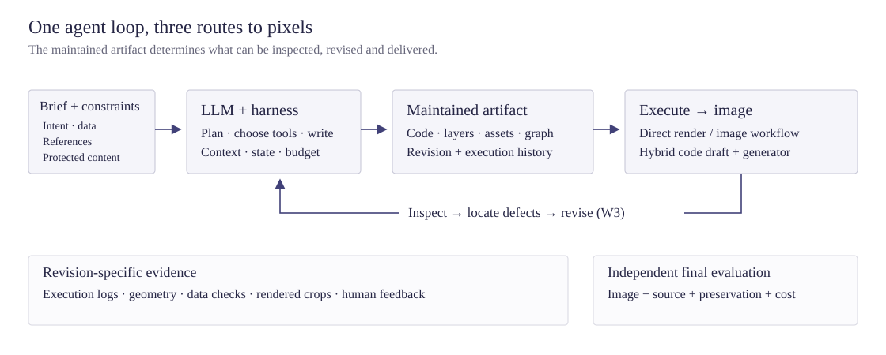

Large language models (LLMs), including multimodal vision–language models (VLMs), increasingly participate in image creation as programmers and tool users. They can translate a brief into SVG, a plotting script, an HTML composition, a scene program or a generation workflow; execute it; inspect the resulting image; and revise the project. This survey examines that agent layer. Its central object is the maintained visual artifact: the source, assets, constraints and execution history from which an image can be produced and changed.
Following the organization of the companion video survey, we classify work first by task and then by workflow. The main routes are code-rendered images, image-model-driven generation, editing and restoration, and reconstruction into editable visual artifacts. Scientific graphics and design receive dedicated treatment because their delivery requirements extend beyond an attractive bitmap. We distinguish an LLM backbone from its harness, an executable program from a structured prompt, and an inference-time feedback loop from training with rendered-image rewards. Methods are connected to their reported evaluations, with separate treatment of visual fidelity, factual correctness, preservation, editability and cost.
Keywords: coding agents; image generation; visual programming; SVG; scientific visualization; graphic design; image editing; image-to-code; agent harness; visual feedback; evaluation.
Primary-source checks for this version were completed on 31 October 2026. The method atlas and downloadable source catalog record the evidence supporting inclusion. This is a structured literature survey, not an experimental reproduction or a claim that every relevant publication has been retrieved.
1. Motivation and scope
A diagram with correct arrows, a chart with faithful data, a poster with editable text and a photograph with convincing texture are all images, but they impose different commitments on a creator. A single image-generation call conceals most construction decisions in a learned model. A coding agent can instead expose some of those decisions as source: coordinates, object identities, data transformations, layer order, labels, masks and tool dependencies. This creates a route to precise revisions and inspectable delivery, while leaving open whether the executed source actually produces the intended visual result.
Two recent studies make that distinction concrete. AgentDrawBench[1] evaluates programmable drawing through multiple interfaces and separates structural fidelity from perceptual quality; its results support a domain-dependent capability profile rather than a general replacement for image generators. MaLiang-Harness[2] maintains a visual program together with revision-specific rendered evidence and measures delivery, quality and computational cost. These evaluations motivate studying the complete model–harness–renderer configuration, rather than attributing its outcome to a language model alone.
The complementary route gives code responsibility for construction and an image model responsibility for appearance. GenClaw[3] uses executable visual sketches before image-model rendering; CoCo[4] uses a code-produced draft as an intermediate representation; and Editable Visual Design[5] maintains a native design document with generated assets. The important distinction is where authority resides: in program geometry, generated pixels, an editable document, or a workflow connecting these objects. An agent can control one without fully controlling the others.
1.1 From planners to coding agents
Early LLM-based systems established several building blocks. VISPROG[6] generated modular visual programs, including image-editing operations. Visual ChatGPT[7], HuggingGPT[8] and MM-ReAct[9] connected language decisions to visual tools. In generation, LLM-grounded Diffusion[10], LayoutGPT[11], VPGen[12], LLM Blueprint[13] and Ranni[14] converted text into layouts, object descriptions or other structured conditions. Control-GPT[15] connected generated TikZ sketches to image synthesis. These are related contributions, but a bounding-box plan, a sequence of tool calls and an editable graphics program are different intermediate representations.
Feedback developed alongside planning. Idea2Img[16] used multimodal self-refinement for visual design; GenArtist[17] combined generation and editing tools; and later workflow agents such as ComfyAgent[18] made executable generation graphs a first-class object. Direct visual programming developed through SVG, TikZ, plotting libraries and scene engines. The resulting field includes both specialized pipelines and general agents that decide how to use an available programming environment. This survey retains the earlier systems as context while concentrating its analysis on construction, execution and revision.
1.2 Scope and inclusion criteria
A core coding work generates, transforms or maintains executable visual code, a native editable document or a programmatic tool workflow to produce or revise an image. A related agent plans or revises image-model/tool actions without demonstrating that code is itself the maintained artifact. Both are relevant, but they support different claims. Specialized models, renderer-conditioning methods, reward models and benchmarks are labeled as components or evaluation resources rather than silently counted as autonomous agents.
We include text-to-image construction, reference-to-program reconstruction, chart and diagram generation, compound graphic design, instruction editing and restoration. Reconstruction belongs here when it yields an editable visual artifact, rather than only recognizing content. We discuss 3D scene programs where rendering or reconstructing an image directly informs the coding loop. General CAD, interactive world modeling, video, ordinary software engineering, visual question answering and retrieval are outside scope except as narrowly identified context. UI reconstruction is included as a demanding renderable-image task, not as a review of web application development. The separate image-model survey covers the broader model landscape.
Searches combined task terms, named-method expansion and citation checks, followed by inspection of primary papers, author project pages or official repositories. Secondary collections supplied discovery leads only. The catalog distinguishes abstract-level checks from method/experiment inspection where recorded; an abstract does not justify a detailed benchmark assignment. Dates normally refer to first public preprint appearance. Conference status, parameter counts and performance numbers are omitted unless needed and directly supported. Aliases and renamed projects are consolidated; distinct works with the same short name remain separate.
1.3 Research questions
- Representation: which requirements become explicit and editable in code, and which remain dependent on generated pixels?
- Control: what does the agent decide, what does the harness enforce, and what evidence can change the next action?
- Revision: can a local defect be repaired without damaging accepted content or losing source editability?
- Evaluation: do reported tests measure an image, a program, a judge, a workflow or a complete delivery process?
- Learning: are improvements made within one task, across tasks through memory or harness optimization, or through model training?
2. The LLM-driven image-agent stack
2.1 Agent components
The backbone proposes code, plans or actions. The harness manages context, files, execution, observations, permissions, retries and budgets. The artifact is the evolving object: a vector document, plotting program, layered composition, scene, mask set or workflow graph. Tools execute or transform that object. Evidence includes parser errors, execution logs, rendered images, geometric measurements and human feedback. A rendered image is an observation of one artifact revision; it should not be treated as evidence that a later revision is correct.

Autonomy is an additional axis. A one-call coder, a fixed multi-stage pipeline, a general tool-selecting agent and a human-assisted authoring system may all produce SVG. Their outputs do not reveal how much control the model exercised. Likewise, several named agents do not establish dynamic planning, and a long reasoning trace does not establish visual feedback.
2.2 Task → workflow
| Task | Maintained artifact / decision | Decisive test |
|---|---|---|
| T1 · Code-rendered images | SVG, TikZ, plotting, Canvas or scene source; explicit construction and rendering. | Visual and semantic correctness, successful execution, typography and source integrity. |
| T2 · Image-model-driven generation | Prompts, layouts, code drafts, references and executable generator workflows. | Final-image adherence and appearance; agreement with intermediate constraints; generation cost. |
| T3 · Editing and restoration | An existing image or project, localized operations, masks and repair plans. | Requested change and preservation of everything outside its intended scope. |
| T4 · Reconstruction and editable design | Recovered or composed visual structure with addressable text, shapes, data and assets. | Re-rendered fidelity, meaningful editability and correctness after subsequent changes. |
W1 directly predicts the deliverable or source. W2 uses staged planning and execution without outcome-dependent revision of the current draft. W3 executes, inspects and revises in response to evidence. W4, following the video survey, denotes continuing decisions from fresh external actions or observations; ordinary multi-turn image refinement is usually W3 with human assistance. We do not force a W4 category onto bounded image production. A search or repair configuration can be W3 even if its individual model calls are single-pass.
Workflow labels apply to reported configurations. Best-of-k selection alone is not W3 unless evaluation changes subsequent proposals. Training on a visual reward does not make inference iterative. Cross-task memory and harness optimization are recorded separately. When a source only establishes staging or unspecified refinement, the atlas preserves that qualification rather than assigning a stronger feedback contract.
| Task | W1 · Direct | W2 · Staged | W3 · Inspect–revise |
|---|---|---|---|
| Code rendering | StarVector[19]; AutomaTikZ[20] (models) | Plan → structured layout → source | MaLiang-Harness[2]; MatPlotAgent[21]; DiagramAgent[22] |
| Model-driven generation | Image generator as component | LayoutGPT[11]; Control-GPT[15]; PosterVerse[23] | Idea2Img[16]; ComfyMind[24]; COMFYCLAW[25] |
| Editing / restoration | InstructPix2Pix[26] (component) | Programmed sequences of localized tools | AgenticIR[27]; VisionDirector[28]; RISE-Agent[29] |
| Reconstruction / design | OmniSVG[30] (model) | Scene Language[31] (representation) | DeTikZify[32]; VIGA[33]; Editable Visual Design[5] |
2.3 Execution routes
In direct rendering, I = R(P, A): a renderer turns program P and assets A into an image. In a hybrid route, I = G(R(P, A), c): a generator consumes the rendered draft and other conditions c. In tool orchestration, the program schedules generation, segmentation, retrieval, compositing or restoration calls; the final image may never have a complete vector description. These routes require different information and resource contracts.
For example, a label stored as an SVG text node remains addressable text, while a label depicted by a generator may become pixels with imperfect spelling. Conversely, a procedural drawing may satisfy every count and relation while rendering an unconvincing face. A hybrid may preserve the composition but change a small symbol. Evaluation must inspect the final output at the boundary where these responsibilities change. The following sections ask what is editable, what the agent decides, what evidence it receives and what the reported test can establish.
3. Code-rendered images
3.1 Direct code generation (W1)
SVG and TikZ offer compact languages for visually structured content. AutomaTikZ[20] studies text-conditioned scientific graphics; StarVector[19] connects visual input and vector code; OmniSVG[30] and InternSVG[34] extend learned SVG capabilities. SVGenius[35] supplies a separate evaluation of understanding, editing and generation. These works establish useful coding capabilities and test resources. A direct generator, however, does not automatically provide execution recovery, project management or feedback-driven revision. We therefore retain it as a backbone or baseline when comparing agents.
The representation itself determines the available control. Editable text nodes support exact string changes; grouped shapes expose semantic parts; a path-only SVG can remain difficult to edit despite being formally vector. TikZ describes geometric relations and typesetting within a compilation environment. A plotting script additionally specifies data transformations and axes. Consequently, code length or parse validity alone is an inadequate quality criterion: a syntactically valid document can have incorrect numbers, unreadable text or a misleading structure.
3.2 Staged planning and execution (W2)
A useful decomposition is to specify content before placement and placement before low-level drawing. In data graphics, LIDA[36] separates data summarization, goal exploration, visualization generation and infographic production. In scene construction, Scene Language[31] separates hierarchical structure, semantics and identity. These examples support a general design choice: preserve the representation needed to check the task rather than immediately collapsing all decisions into pixels.
Staging also creates failure boundaries. A correct renderer cannot repair a mistaken data aggregation; attractive geometry cannot correct a false scientific relation. For a diagram, the content graph and its layout should be independently inspectable. For a chart, source data, transformations and plotted values should be linked. This is an evaluation recommendation of this survey, not a claim that all reviewed pipelines provide such checks.
3.3 Execute–inspect–revise (W3)
Execution feedback first answers whether the program runs. Visual feedback answers whether its result is useful. MatPlotAgent[21] brings visual inspection into scientific plotting, while DiagramAgent[22] organizes diagram planning, code generation and checking. DeTikZify[32] uses search in graphics-program synthesis; Chat2SVG[37] combines correction of a vector template with image-model-guided optimization. These mechanisms differ: compiler repair, search over programs, visual critique and continuous path optimization should not be conflated into a single undifferentiated loop.
Render-in-the-Loop[38] and RefineSVG[39] make rendered observations central to vector generation or refinement. MaLiang-Harness[2] additionally ties state, operations and verification to a common revision. This matters when a correction introduces a regression: a cached assessment of the previous render no longer certifies the current file. A practical loop needs an explicit choice between accepting a patch, testing another candidate and restoring an earlier artifact.
AgentDrawBench[1] also cautions against assuming that more iterations guarantee better images: its extended-budget experiment reports only modest structural improvement and no clear holistic preference advantage. A coding interface may impose an expressiveness bottleneck that repeated critique cannot solve. The study's zero-shot setting still permits multiple tool turns; it should not be compared as if it were a one-call generator.
3.4 Scientific graphics
Scientific visuals require two forms of fidelity: fidelity to a visual specification and fidelity to the underlying claim or data. VisCoder[40] treats executable plotting code as a learning target; Feynman[41] uses a declarative diagram language; AutoFigure[42] refines an SVG/HTML layout, conditions image synthesis on its rasterization and corrects text with verified overlays. PaperVizAgent[43], formerly PaperBanana, uses image models for diagrams and can use executable Python for statistical plots. Their outputs can look similar while differing in whether the final artifact is native code, generated pixels or a hybrid. The atlas records this distinction rather than treating every scientific-figure agent as a code renderer.
Paper2Poster[44] moves from one figure to a document-scale visual argument, with planning and feedback over a poster. EvoDesign[45] and Designer-RSI[46] add mechanisms for evolving design expertise or reusable procedures. These settings make content selection, reading order, typography and local editability part of the task. They also make evaluation harder: copying an existing picture and communicating a new result are different objectives, even when both use the same drawing language.
Synthesis. Code rendering exposes variables and structure that an agent can inspect and change. Its advantage is strongest when the task values exact relationships, data, text or reusable construction. Its principal failure boundary is the gap between a valid program and the intended visual or factual meaning.
4. Image-model-driven generation
4.1 Layout planning
LLM-grounded Diffusion[10], LayoutGPT[11] and VPGen[12] use language-level decomposition to make object placement more explicit. LLM Blueprint[13] adds box-level iterative refinement, while Ranni[14] uses an editable semantic panel. RPG[47] combines recaptioning, planning and regional generation. These systems explain an important precursor to coding agents: the LLM supplies a representation that a visual model realizes. A list of boxes is nevertheless a limited control language, not proof that the model can maintain an arbitrary executable project.
The planner and generator can fail independently. A plan may omit a relation; the generator may disregard a correct plan. Evaluating only the plan therefore overstates image fidelity, while evaluating only the image makes the source of failure opaque. For hybrid systems, intermediate and final checks should be reported separately. Native reasoning-oriented image models are useful components or baselines, but internal reasoning tokens alone do not establish an external tool-using agent.
4.2 Code-guided rendering
Control-GPT[15] provides an early executable sketch route through TikZ. CoCo[4] generates a code-based visual draft before image refinement, and GenClaw[3] combines knowledge gathering, executable sketching and appearance generation. Here code can act as a spatial commitment: it makes arrangements explicit before a learned model supplies richer appearance. This is a different use of code from merely wrapping a generator API.
Hybrid systems must preserve the constraints that justified using code. The generator may alter object counts, text, diagrams or small details despite receiving a correct draft. Thus neither a faithful proxy nor an appealing final image alone establishes success. DraCo[48] is a relevant draft-based comparison, but its draft is neural rather than a generated program. PSP-DiT[49] models image and scene-program representations jointly; it is a model component, not evidence of a coding agent selecting actions in a runtime.
4.3 Workflow programming
In another route, the editable artifact is a graph of model and image-processing operations. ComfyBench[18] studies this setting and introduces ComfyAgent; ComfyGPT[50], ComfyMind[24] and COMFYCLAW[25] investigate workflow construction or improvement. The difficult decisions include which nodes to use, how their typed inputs connect, which parameters to change and how to respond when a graph executes but yields an unsuitable image. Graph validity and visual adequacy are separate tests.
ComfyMind uses modular workflow reasoning and execution feedback; COMFYCLAW combines typed graph edits and rollback with region-level verification and reusable skills. SymbOmni[51] and OmniHarness[52] further develop symbolic workflow policies. In OmniHarness, a restricted Python-like language is compiled into a ComfyUI graph; it is not arbitrary Python executed directly. Such systems offer more control than prompt rewriting alone, but their action space depends on available nodes and installed models. Evaluating only the final image would miss workflow portability and whether another user can execute the generated graph.
4.4 Feedback and search
Idea2Img[16] and GenArtist[17] establish feedback-driven generation and editing patterns. More recent GenAgent[53], Qwen-Image-Agent[54], ToolArtist[55] and CanvasAgent[56] give agents different combinations of reasoning, tools, intermediate observations and learning. T2I-Copilot[57] also makes human intervention relevant. The shared question is whether an observation changes the next creation action, not whether the framework is described as multi-agent.
Knowledge-intensive generation introduces another source of state: retrieved references. Agentic Image Generation in the Wild[58] studies search-assisted generation beyond a generator's stored knowledge. Reference selection, attribution of roles and preservation of entity identity become part of the control problem. AutoRef[59] addresses a different level of adaptation: a coding agent optimizes the harness across tasks while the underlying models remain frozen. That outer search must be separated from any within-image refinement loop.
Synthesis. Code can specify a visual draft, compose a model workflow or improve the harness itself. These are distinct contributions. Image quality remains jointly determined by the agent's decisions, the available tools and the generator's response to their conditions.
5. Editing and restoration
5.1 Edit and preserve
Editing starts with an existing artifact and introduces an asymmetric objective: fulfill the requested change while retaining accepted content. A whole-image similarity score can reward an unchanged image that ignores the instruction; an instruction score can reward a complete redraw that destroys identity. An adequate test must examine both. Program-based editing adds a third obligation: retain useful source structure rather than replacing a document with a flattened picture.
InstructPix2Pix[26], MGIE[60] and EditWorld (image editing)[61] are relevant learned editing components. Their use of language models, expressive instructions or generated training data should not be mistaken for a general coding-agent deployment. ControlNet[62] supplies spatial conditioning rather than an agent policy. These components become part of an agent when a controller chooses how to use them and, in a feedback configuration, changes subsequent actions based on observed results.
5.2 Programs and tool paths
VISPROG[6] makes editing operations explicit in a modular program. ControlLLM[63] plans over a tool graph; CLOVA[64] reflects on human feedback and adapts its tools. CoSTA*[65] formulates multi-step editing as cost-sensitive tool-path search, and FaSTA*[66] reuses successful subroutines before invoking a slower search. Their evidence concerns the selected tool interface and cost-quality protocol, rather than arbitrary manipulation of every image format.
RISE-Agent[29] is a particularly direct connection to coding: its planner can emit generative prompts or declarative programs, and its executor combines deterministic canvas operations with neural editing. Verification can accept, refine or replan. The resulting distinction is useful beyond that system: a precise recoloring, relocation or text replacement may be expressible as an explicit operation, while a semantic appearance change may require a learned editor. The controller must choose and validate that boundary.
5.3 Execute–inspect–revise (W3)
MIRA[67], EditThinker[68], IMAGAgent[69], RefineEdit-Agent[70] and IntentEdit[71] study different ways of decomposing edits, inspecting results or improving the editing process. VisionDirector[28] translates long instructions into structured goals and verifies staged edits with rollback. EditAgent[72] combines editor routing, recorded verification and candidate comparison. These mechanisms help identify where a request was lost, but comparisons remain conditional on the actual editor, planner, judge and attempt budget.
Agent Banana[73] addresses high-definition multi-turn editing through structured memory, decomposition and state-aware revision. Resolution matters here: a resized preview may conceal typography or texture damage in a deliverable. Likewise, a multi-turn agent must preserve accumulated decisions, not merely the latest instruction. A sensible evaluation includes intermediate states, explicit dependencies between requests and a final preservation check.
Reported benchmark names should not substitute for protocols. MIRA's inspected evaluation uses an author-selected combination derived from MagicBrush and CompBench; it is not a full standard score on every source dataset. FaSTA*'s inspected MagicBrush examples are qualitative, while its main quantitative comparison uses the CoSTA* author benchmark. These distinctions are retained in Appendix B.
5.4 Restoration agents
Restoration adds a diagnostic problem: noise, blur, compression and other degradations can coexist, and the order of operations matters. RestoreAgent[74] assesses degradation and selects tasks, order and specialist models. AgenticIR[27] investigates feedback and experience for restoration; MAIR[75], HybridAgent[76], JarvisIR[77] and 4KAgent[78] extend the landscape through different task, tool and quality objectives. AutoDIR[79] is retained as a related restoration component.
These are relevant tool agents, but restoration should not be used as a proxy for unrestricted creative editing. A high-quality restored image can still introduce unsupported details. Fidelity to an available clean target, no-reference perceptual quality and downstream perception are different criteria. An agent's choice of a stronger restoration model also does not by itself demonstrate better planning. Tool-matched comparisons and evaluation of ordering decisions are therefore necessary to isolate the agent's contribution.
Synthesis. The central editing problem is controlled change. Explicit operations, masks, reusable tool paths, state records and rollback make that control more inspectable. Evidence must still establish both the requested modification and preservation of accepted content.
6. Reconstruction and editable design
6.1 Image-to-code reconstruction
Image-to-code reconstruction asks for a program whose rendering resembles a reference. Plot2Code[80] and ChartMimic[81] examine chart reconstruction; Design2Code[82] studies webpage screenshots; DrawAI[83] examines reconstruction into editable visual artifacts. The desired output is more than a screenshot: it should expose objects or parameters that support subsequent changes. Raster fidelity and useful editability must be assessed separately.
Several programs can render the same image. A full-canvas embedded bitmap may resemble a reference exactly while providing none of the intended semantic controls. Conversely, a compact program can recover the correct data or layout while differing in incidental antialiasing. Evaluators should specify permitted assets, external images, fonts and tracing operations, and test actual edits when claiming editability. Source-text matching alone cannot accommodate the many equivalent ways to implement a visual result.
VIGA[33], Thinking in Blender / SEIG[84] and LEGO-Anything[85] extend reconstruction to scene programs; SceneCraft[86] and BlenderAlchemy[87] show how rendered feedback can guide scene construction or modification. These are contextual connections to inverse graphics. A successful single-view render does not prove hidden geometry or physical correctness, and this survey does not extend their image evidence into a claim about complete world modeling.
6.2 Layered visual design
A poster, advertisement or infographic typically combines text, shapes and raster assets. COLE[88] and OpenCOLE[89] provide context for hierarchical graphic-design generation; LayoutNUWA[90] uses a code-based layout representation; Graphist[91] addresses structured layout generation. PosterVerse[23] combines a generated background with HTML-based typography. TransAnyText[92] uses structured text rendering and image editing for translation in commercial images. These methods make the division between exact text and generated appearance explicit.
Editable Visual Design[5] treats native HTML/CSS, generated assets and render feedback as parts of an editable production process. Its inspected evidence is a set of qualitative design cases and comparisons, not a named quantitative leaderboard. ReDesign[93] recovers layered structure through verified tool use, while AutoDesign[94] studies coding-agent optimization of a poster-design harness. The common evaluation question is whether the result supports real downstream changes: replacing text, moving an object, changing a color or resizing the canvas without redrawing the entire composition.
Scientific posters add content selection and layout at document scale. Paper2Poster[44], PosterAgent (SARL)[95], PosterGen[96] and PosterForest[97] cover different orchestration and training choices. The PosterAgent introduced by Paper2Poster and the later stage-aware reinforcement-learning work are distinct publications. LiveFigure[98] writes scripts targeting PowerPoint; SciFig[99] produces editable XML diagrams. Crafter[100] maintains a structured specification and critic around image generation, while its CraftEditor supplies iterative raster-to-SVG reconstruction. AutoFigure-Edit[101] is a separate extension that combines segmentation, asset extraction, SVG-template refinement and asset injection; the SVG can contain raster assets. BannerAgency[102], P2P[103] and PosterMELD[104] further cover editable advertising, HTML posters and bounded poster repair. These formats support different kinds of downstream editing.
6.3 Human interaction
Data Formulator[105] and Data Formulator 2[106] connect human intent to visualization authoring. VisInteract[107] and RSIV-Harness[108] investigate interactive clarification or visualization workflows. Human participation is part of the experimental contract: asking for missing data, obtaining a layout choice and receiving a correction are not free observations available to an autonomous baseline.
SketchAgent (Vinker et al.)[109] distinguishes conversational sketch editing from shared-canvas collaboration with alternating human and agent strokes. The former is naturally a W3 revision loop; the latter is a defensible image-domain W4 configuration because fresh external drawing actions change the evolving canvas. It should not be confused with SketchAgent (Tan et al.)[110], a separate sketch-to-diagram work. A persistent file or several chat messages alone does not justify the stronger W4 label.
Synthesis. Reconstruction and design convert an image into a maintained object with usable controls. The strongest test is not whether source exists, but whether meaningful edits remain possible and preserve the rest of the artifact.
7. Agent mechanisms
7.1 Localizing feedback
Feedback is useful when it identifies an actionable defect. A parser error points to syntax; a bounding-box test detects clipping; a data assertion detects an incorrect value; a visual critic can identify an awkward composition. These signals operate at different levels. An agent should not use an aesthetic score to certify numerical accuracy, or a compilation result to certify a scientific claim.
Code provides addresses for local changes, but those addresses must remain connected to the image. An object identifier, layer, plot series or workflow node helps turn a visual complaint into an operation. Revision tracking then connects that operation to a specific render. Candidate comparison, rollback and renewed checks limit regressions; they do not eliminate the need for independent evaluation. This motivates preserving both source-level and image-level evidence throughout a run.
7.2 Training with visual feedback
RLRF[111] uses rendered-image rewards for SVG post-training. VinciCoder[112] combines visual refinement supervision with coarse-to-fine visual reinforcement learning. TikZilla[113] and SciTikZer[114] develop scientific-graphics training, while CTRL-S[115] combines SVG tasks and reward signals. These works strengthen the model that an agent may use. Their training feedback should be described separately from the deployed workflow.
Reward design controls what the model can learn to preserve. GeoSVG-RL[116] uses executable geometric constraints. RULER[117] constructs instruction-specific SVG rubrics. Visual-ERM[118] evaluates visual equivalence for structured outputs. IR4RL[119] assigns localized feedback from intermediate renders rather than only a terminal result. This last approach depends on the availability of renderable program prefixes; it does not make arbitrary incomplete code executable.
Visual reward optimization also creates a risk of exploiting the judge. A model can improve a surrogate score without improving the property the user values. Held-out prompts, controlled corruptions, human checks and judges separate from the optimization signal are therefore needed. A reported reward increase is evidence about that training objective until independent evaluation establishes a broader improvement.
7.3 Memory and test-time search
Reusable functions, tool subroutines, workflow libraries and design experience reduce repeated discovery. SceneCraft's function library, FaSTA*'s subroutines, OmniHarness's workflow and failure libraries, and Designer-RSI's procedural experience illustrate different forms of reuse. None requires assuming that the backbone's weights change during deployment. Memory should record the conditions under which a procedure worked, not just retain a successful-looking output.
AutoRef operates at a different level by rewriting harness code across tasks and separating proposal feedback from candidate selection. This makes held-out evaluation essential: otherwise the procedure can adapt to the same tasks on which it is later judged. Similar care applies to online memories that are updated during benchmark execution. Report whether memory is frozen, seeded or allowed to accumulate across examples.
At inference time, additional computation can be spent on parallel candidates, deeper search, larger renders or further revision. The useful comparison holds total resources and available tools explicit. More iterations can compound errors or optimize the production critic without improving independent quality. Stopping should depend on verified requirements and marginal improvement, not simply exhausting a fixed turn limit.
7.4 Cross-task comparison
| Mechanism | Transferable role | Task-specific limitation |
|---|---|---|
| Planning / decomposition | Expose dependencies and divide a brief into testable commitments. | A layout plan cannot certify data, scientific semantics or final generator adherence. |
| Executable representation | Address objects and repeat construction; enable targeted edits. | Source existence does not imply useful semantic editability. |
| Critique / verification | Return evidence that can change the next action. | Local geometry, appearance, instruction following and preservation need different checks. |
| Search / rollback | Compare alternatives and recover from regressions. | Selection quality depends on a reliable judge and a fair accounting of all attempts. |
| Memory / learning | Reuse procedures, improve policies or optimize the harness. | Current-task revision, cross-task adaptation and weight updates are different timescales. |
8. Evaluation
8.1 Tests by task
Programmable drawing and reconstruction. AgentDrawBench and MaLiang-IBench evaluate complete visual generation configurations; SVGenius[35], VectorGym[120], Plot2Code[80], ChartMimic[81] and Design2Code[82] focus on particular representations or tasks. ChartEditBench[121] and VisEditBench[122] add revision requirements. These tests should not be merged into one numerical ranking: drawing from a brief, reconstructing a reference and editing a known program offer different information.
Generated-image semantics. GenEval[123] and T2I-CompBench[124] diagnose compositional alignment; ConceptMix[125] varies combinations of concepts; WISE[126] and T2I-ReasonBench[127] emphasize knowledge or reasoning requirements; OneIG-Bench[128] broadens evaluation dimensions. TIFA[129] and DSG[130] use questions or structured dependencies to assess text-image faithfulness. They can evaluate an agent's final image but do not, by themselves, measure source quality, trace validity or successful export.
Structured content and artifact operations. StructBench[131] examines factuality in structured visuals; SciFlow-Bench[132] evaluates recovered graph structure from rendered scientific diagrams, with inverse-parser accuracy as an additional evaluation dependency. VAO-Bench[133], from Pixels or Code?, supplies an image-only comparison protocol for agents operating through different representations and emphasizes dependent changes and preservation. Such evaluations are closer to a maintenance task than a one-shot image preference test. They still require a clear account of tools, inputs and judge behavior.
Editing and restoration. EditBench[134], MagicBrush[135], PIE-Bench[136], ImgEdit-Bench[137] and GEdit-Bench[138] cover different editing constructions and evaluation protocols. CompBench[139], Complex-Edit[140], ComplexBench-Edit[141], KRIS-Bench[142] and InEdit-Bench[143] extend the difficulty or reasoning demands; EdiVal-Bench[144] and GEditBench v2[145] examine evaluation more directly. CompBench, T2I-CompBench, Complex-Edit and ComplexBench-Edit are distinct works. Restoration needs separate tests of fidelity, perceptual quality and any downstream task, rather than assuming these instruction-editing suites apply unchanged.
The evaluator itself. ChartJudgeBench[146], Visual-ERM's VC-RewardBench, EditScore[147] and FIRM[148] provide evidence about critics or reward models. ImageReward[149] is relevant preference-model context, not an agent benchmark. A critic's agreement with humans on one distribution should not be assumed to transfer to tiny diagram labels, charts, exact geometric constraints or high-resolution editing.
8.2 Method–benchmark links
The method–evaluation crosswalk lists inspected connections rather than assigning convenient benchmarks to every method. It distinguishes an author-created task suite, a named public benchmark, a human study and a qualitative demonstration. Related datasets listed in the atlas may be training resources or evaluation material; the detailed evidence and caveat fields determine the relationship.
Three common errors are avoided here. First, an author's qualitative examples do not establish a benchmark score. Second, a subset or modified protocol should not inherit the name and comparability of a full standard evaluation. Third, a paper's reimplementation of a competing agent does not reproduce all configurations from that agent's original paper. The crosswalk is a map of reported evidence, not a cross-paper leaderboard.
8.3 Fair comparison
- Identify the configuration. Record backbone and version, harness, prompts/skills, renderer, generation models, libraries, reference assets and human interventions.
- Define information privileges. Distinguish text-only creation from reference reconstruction; disclose source code, data, masks, search, templates and allowed external assets.
- Count every attempt. Include execution failures, non-delivery, retries, sampling, rendering and model/tool costs. Report final quality on delivered outputs separately from full-set success.
- Check the deliverable. Verify dimensions, file format, transparency where relevant, readable text, linked assets and re-renderability. For scientific graphics, inspect values, labels and relations against the source.
- Test revision. Measure requested changes, protected content and accumulated multi-turn constraints. For editable artifacts, perform actual object-level edits.
- Use independent assessment. Separate production feedback from final judging, audit the judge and report disagreement or missing evaluations.
A useful result is a profile of delivery reliability, instruction fidelity, factual accuracy, visual quality, preservation, editability and resource use. Aggregation can summarize one fixed protocol, but should not conceal which requirement failed or join scores whose tasks and scales differ.
9. Synthesis and research agenda
9.1 Evidence synthesis
Code exposes control, not guaranteed correctness. The reviewed systems make coordinates, content structure, tools or editing operations explicit. Success still depends on choosing the right representation, executing it and checking its visual consequences. Structural precision and appearance are complementary objectives, and a hybrid must preserve both sides of its interface.
The harness is part of the method. Observations, available tools, revision tracking, memory and stopping rules materially affect what the backbone can do. General coding ability alone is insufficient evidence of reliable visual delivery. A specialized model and a complete agent run should remain separate units of comparison.
Images increasingly become maintained projects. SVG, plots, diagrams, posters, workflow graphs and layered designs can survive beyond one render. Their value becomes visible when the user requests a change. Evidence about source structure and preservation is therefore as important as a first-image preference score.
The weakest verified boundary limits the conclusion. A compiler test does not certify meaning; a VLM judgment does not prove numerical correctness; a selected showcase does not establish general reliability. The article's classifications are a synthesis of the available evidence, while causal superiority claims require controlled comparisons.
9.2 Research agenda
- Representation selection. Decide which parts of a brief belong in exact code, editable text, scene geometry or generated assets, and change that choice when the initial representation is inadequate.
- Grounded local repair. Map a visible defect to the responsible source objects or workflow nodes, then verify the effect and preservation of a targeted patch.
- Constraint transfer across renderers. Carry object identity, text, counts and geometry from code drafts into generated pixels with explicit checks for drift.
- Factual visual reasoning. Test chart data, mathematical relations, scientific mechanisms and diagram topology separately from aesthetics and approximate perceptual similarity.
- Editability under use. Evaluate realistic sequences of object-level edits, resizing, asset substitution and format export rather than treating native source as sufficient evidence.
- Independent visual critics. Build judges that recognize fine-grained failures, abstain when evidence is insufficient and remain reliable under optimization.
- Budget-aware search and stopping. Compare sampling, rendering, critique and repair at matched cost, including regressions and failures.
- Reusable experience without leakage. Separate current-task state, reusable skills, harness optimization and weight learning; publish memory initialization and held-out evaluation rules.
9.3 Coverage boundaries
This survey aims for broad coverage of the mechanisms and task families relevant to image coding agents. The catalog includes historical foundations, recent coding systems, neighboring image agents, learning components and diagnostic benchmarks. It does not claim an exhaustive census of image models, restoration networks, every UI tool or all 3D generation research. New names, inaccessible materials and evolving project versions remain possible sources of omissions.
Evidence is uneven. Some methods expose code and benchmark protocols; others document a mechanism and show examples. Sources checked only at abstract level support correspondingly narrow descriptions. Workflow assignments are analytical and preserve uncertainty where the feedback boundary is unclear. The downloadable audit records search families, checked sources, alias handling and exclusions so that additions can be made without silently strengthening earlier claims.
10. Conclusion
LLM-driven image creation now spans direct graphics programming, executable model workflows, hybrid code-to-pixel generation, tool-based editing and reconstruction into editable designs. A coherent comparison follows the maintained artifact and the decisions the agent can actually revise. The next step is reliable visual maintenance: delivering a correct result, preserving its meaning through changes and providing evidence that the final source and rendered image satisfy the same request.
Appendix A. Method atlas and implementation
A.1 Method atlas
This catalog contains 192 distinct primary works. Each record is counted once even when a paper introduces both a method and a benchmark. “Core coding / executable workflow” includes generated programs and typed tool graphs; it does not imply unrestricted source execution. “Related agent / context” preserves neighboring planning and tool-use evidence without asserting code authorship. A workflow label describes the checked configuration, not every possible use of the named system. For each method, the table keeps the mechanism, inspected evidence and limitation together.
Download the literature catalog (JSON), CSV or source and scope audit. The catalog's related-resource fields include benchmarks and datasets; only the evidence text and Appendix B establish how they were used.
Code-rendered graphics, scientific communication and editable design (61 works)
| Work / role | Task / workflow | Mechanism | Evidence and boundary |
|---|---|---|---|
| AutomaTikZ[20] 2023 · component | code-rendered scientific figures W1 | Fine-tunes language models to map captions to compilable TikZ drawing programs. | Primary abstract describes DaTikZ and text-conditioned vector program synthesis. Limit: Direct conditional generation is not by itself an execution-feedback agent. |
| COLE[88] 2023 · related agent / context | layered graphic design W2 | Decomposes intent into layer-aware captioning, layout and image/text generation handled by specialized language, multimodal and diffusion models. | Primary abstract verifies hierarchical generation, DESIGNINTENTION and an editable layered interface. Limit: A staged design pipeline is not automatically a source-writing execution-feedback coding agent. |
| Data Formulator[105] 2023 · core coding / executable workflow | interactive chart authoring W2 | Users bind desired data concepts to visual channels; an AI agent synthesizes transformations and produces charts. | Primary abstract verifies concept binding and human study of transformation-heavy visualization. Limit: Human decisions specify concepts and channels; this is assisted authoring rather than fully autonomous chart planning. |
| LayoutNUWA[90] 2023 · component | layout code generation W1 | Encodes layout conditions as masked HTML, fills missing code with an LLM and renders the layout. | Primary abstract and ICLR paper verify Code Initialization, Completion and Rendering. Limit: Three fixed processing stages do not establish agent planning or feedback-driven execution. |
| LIDA[36] 2023 · core coding / executable workflow | charts and chart-based infographics W2; W3 code repair | Summarizes data, proposes goals, generates/executes/refines visualization code and optionally stylizes the result using an image generator. | Primary abstract and official repository identify the four modules and supported edit/evaluate/repair operations. Limit: Image stylization needs separate data-fidelity checks; a code-correct chart does not certify subsequent raster changes. |
| StarVector[19] 2023 · component | SVG generation and reconstruction W1 | Uses a multimodal language model to emit SVG source with semantic primitives from visual or text inputs. | Abstract and author project describe SVG-Stack and SVG-Bench. Limit: First preprint is 2023; CVPR publication is 2025. Single-pass model is not a full repair harness. |
| Chat2SVG[37] 2024 · core coding / executable workflow | hybrid SVG generation and editing W3 | LLM prompt expansion and SVG template construction include rendered visual correction; diffusion-guided optimization then refines paths. | CVPR paper section 3.1 explicitly renders templates and returns images to the VLM for corrected code. Limit: The later geometric optimization is distinct from the LLM visual feedback loop. |
| Data Formulator 2[106] 2024 · core coding / executable workflow | iterative chart authoring W2; human-directed revisions | Combines UI and natural language to steer AI-generated transformations while preserving reusable branching data/chart histories. | Primary abstract describes iterative visualizations, history navigation and user study. Limit: Human iteration should be recorded separately from an autonomous visual critic. |
| Design2Code[82] 2024 · related agent / context | screenshot-to-HTML evaluation evaluation | Tests webpage reconstruction from screenshots using automatic and human visual evaluations. | Primary abstract verifies real webpage cases and layout/element diagnostic metrics. Limit: Relevant as visual-code reconstruction evidence; general website behavior is outside static-image authoring scope. |
| DeTikZify[32] 2024 · core coding / executable workflow | image/sketch-to-TikZ reconstruction W3 | A multimodal model produces TikZ; MCTS-based inference searches and refines candidate programs. | Primary abstract verifies sketch/image inputs, graphics-program output and MCTS inference. Limit: Distinguish inference-time program search from dialogue with human editors. |
| DiagramAgent[22] 2024 · core coding / executable workflow | structured diagram generation and editing W3 | Separates planning, code production, checking and diagram-to-code conversion into cooperating modules. | Primary abstract and official repository verify four named modules and generation/refinement tasks. Limit: A multi-agent label alone does not imply human-free operation across every supported editing mode. |
| Graphist[91] 2024 · component | hierarchical layout generation W1 | Maps unordered RGBA assets to a JSON draft specifying element coordinates, sizes and layer order. | Primary abstract and official repository verify hierarchical-layout task and JSON representation. Limit: This is a layout-generation model, not a demonstrated execute-inspect-revise design agent. |
| MatPlotAgent[21] 2024 · core coding / executable workflow | data-grounded chart creation W3 | Understands the request, writes plotting code, debugs execution failures and corrects charts with visual feedback. | Primary abstract verifies these three modules and MatPlotBench. Limit: Model-based visual ratings do not by themselves guarantee correct data transformation. |
| OpenCOLE[89] 2024 · related agent / context | layered graphic design W2 | Builds a modified COLE pipeline using publicly available training datasets. | Primary abstract states open pipeline/training and GPT-4V evaluation. Limit: Workshop extended abstract; evaluator-based comparison is not a complete autonomous-agent assessment. |
| Sketch2Code[150] 2024 · related agent / context | sketch-to-webpage reconstruction evaluation | Evaluates initial prototypes and revisions from simulated-user feedback or agent clarification questions. | Official project and repository verify direct and multi-turn protocols. Limit: Simulated user interaction is a distinct evidence condition from an autonomous visual critic. |
| SketchAgent (Vinker et al.)[109] 2024 · core coding / executable workflow | vector sketch generation and collaborative drawing W1; W3 in editing; W4 in shared-canvas collaboration | Emits a string-based stroke language rendered as vector curves; rendered canvas supports conversational edits and alternating human-agent strokes. | CVPR paper section 4.1 explicitly separates chat editing from shared-canvas interaction. Limit: Distinct from Tan et al. SketchAgent for sketch-to-diagram conversion. |
| Web2Code[151] 2024 · related agent / context | webpage visual reconstruction W1; evaluation | Constructs screenshot/instruction-to-HTML data and evaluates webpage understanding plus code reconstruction. | Primary abstract verifies instruction tuning and evaluation framework. Limit: HTML renderer is shared with graphic design, but this work studies webpages rather than image-art agents. |
| AMACE[152] 2025 · core coding / executable workflow | iterative chart generation W3 | A Chart Code Generator, Chart Replier and Chart Quality Evaluator collaborate in an iterative loop to tailor generated charts to the intended query. | Primary ACL abstract and paper evaluation passage describe iteration across chart-understanding-derived tasks and a human comparison of successive rendered versions. Limit: Reported improvement depends on backbone, task and iteration; automatic chart question answering or caption metrics do not alone establish factual chart accuracy. |
| AutoPP[153] 2025 · related agent / context | product poster generation and performance optimization W2; optimization context | Jointly designs background, text and layout, encodes elements as condition tokens for image rendering, and uses element replacement plus isolated preference optimization from click-through feedback. | Primary abstract verifies unified design, conditional rendering, online CTR feedback and AutoPP1M. Limit: The inspected source does not establish executable graphic-code authoring; include as an adjacent design and outcome-optimization comparison. Online optimization is not evidence of an interactive coding-agent loop. |
| BannerAgency[102] 2025 · core coding / executable workflow | editable advertising banners W3 | Builds a creative brief and text-free generated background, then a foreground JSON blueprint; a Developer emits SVG or Figma-plugin JavaScript. Rendered designs and reviewer feedback enter memory for blueprint revision. | Primary full text Sections 3.3–3.4 verify render-review-refine memory and both code backends; BannerRequest400 evaluation includes automated ratings and human preferences. Limit: Foreground element editability does not make a generated raster background internally vector-editable. The reviewer is a model, and production-ready is its stopping judgment. |
| ChartCoder[154] 2025 · component | chart-to-code reconstruction W1 | Uses a code-language-model backbone, chart/code data and Snippet-of-Thought supervision for chart reconstruction. | Primary abstract identifies Chart2Code-160k and staged code supervision. Limit: Stepwise supervised generation is not an execution-feedback agent; pixel similarity does not prove original data recovery. |
| DataWink[155] 2025 · core coding / executable workflow | SVG visualization reuse and interactive editing W2; W4 shared interactive canvas | Decomposes an SVG into marked-up structure and a data-encoding representation, then synthesizes a D3.js template. An assistant observes the current canvas and program, edits data/design logic, and exposes new parameters as interactive widgets. | Primary full text Sections 2.4 and 3.2 verify code synthesis, canvas-conditioned updates, checkpointed state and widget controls; the paper reports a user study of replication and free-form exploration. Limit: Requires SVG examples; no general raster-to-code capability is established. Shared-state human authoring is distinct from autonomous visual self-correction. |
| InternSVG[34] 2025 · component | SVG generation, editing and understanding W1 | Unifies SVG tasks with special tokens and staged training from short static graphics to long illustrations and animation. | Primary abstract and author project identify SAgoge and SArena. Limit: Static tasks are in scope; the presence of animation tasks does not turn the model into a persistent interactive agent. |
| OmniSVG[30] 2025 · component | SVG generation and reconstruction W1 | Adapts a pretrained VLM with discrete SVG command and coordinate tokenization for autoregressive conditional synthesis. | Abstract and official paper cover text, image and character-reference conditions. Limit: Do not infer render-inspect-repair inference from its training pipeline. |
| P2P[103] 2025 · core coding / executable workflow | paper-to-HTML poster W3 | Uses visual-element processing, content generation and poster assembly agents, each with dedicated checkers enabling iterative refinement; posters render from HTML. | Primary abstract and official repository verify the three-agent organization, P2PInstruct, P2PEval, and JSON/HTML/PNG outputs. Limit: This is distinct from Paper2Poster/PosterAgent. LLM judging and human-authored checklists evaluate different aspects and are not guarantees that every source fact is preserved. |
| Paper2Poster / PosterAgent[44] 2025 · core coding / executable workflow | editable scientific posters W3 | Parses paper assets, plans a binary-tree layout and refines panels with executable rendering code and VLM feedback. | Primary abstract verifies Parser, Planner and Painter–Commenter loop plus editable PPTX output. Limit: Its PosterAgent is distinct from Yu et al. 2026 PosterAgent trained with SARL. |
| PlotGen[156] 2025 · core coding / executable workflow | scientific charts W3 | Uses planning and Python-code agents plus separate numeric, lexical and visual feedback agents to refine plots. | Primary abstract names the five roles and reports MatPlotBench evaluation. Limit: Keep numeric accuracy distinct from label or appearance judgments. |
| PosterForest[97] 2025 · related agent / structured authoring | scientific poster design W2; recursive content/layout refinement | Maintains a Poster Tree linking document hierarchy and visual-textual semantics; content and layout agents recursively refine composition. | Current primary abstract verifies hierarchical representation and content-layout coordination. Limit: Inspect-render feedback is not specified in the inspected abstract, so do not automatically assign autonomous W3. |
| PosterGen[96] 2025 · related agent / structured authoring | scientific poster design W2 | Coordinates content extraction/curation, layout, style and rendering to compose scientific posters. | Primary preprint abstract verifies pipeline and layout/readability/aesthetics rubric. Limit: Do not infer autonomous visual revision solely from aesthetic evaluation or a multi-agent label. |
| SketchAgent (Tan et al.)[110] 2025 · core coding / executable workflow | sketch-to-structured-diagram W3 | Combines sketch recognition, symbolic reasoning and iterative validation to reconstruct machine-readable diagrams. | Primary abstract identifies the Sketch2Diagram Benchmark. Limit: Distinct from Vinker et al. language-driven sketch generation; output syntax is not specified in the inspected abstract. |
| TikZero / TikZero+[157] 2025 · component | text-to-TikZ graphics W1 | Separately trains an image-conditioned graphics-program model and a caption-to-image-representation adapter; image representations bridge unpaired programs and captioned images. TikZero+ adds paired caption-program supervision. | Primary abstract and ICCV paper explain training-data decoupling and compare generated graphics with caption-aligned and commercial baselines. Limit: The zero-shot designation concerns absence of aligned caption-program examples in TikZero training; TikZero+ is explicitly not zero-shot in that sense. A trained generator is not by itself an inference-time agent. |
| VisCoder[40] 2025 · core coding / executable workflow | Python visualization and self-debugging W1; W3 self-debug protocol | Fine-tunes code models with validated plotting examples and multi-turn runtime-feedback correction dialogues. | Primary abstract identifies VisCode-200K and self-debug evaluation. Limit: Execution pass rate measures whether a visual is produced, not whether all scientific semantics are correct. |
| VisCoder2[158] 2025 · core coding / executable workflow | multi-language visualization code W1; W3 self-debug protocol | Trains visualization coding models on executable examples and repair dialogues across multiple languages, evaluated with rendering and multi-round debugging. | Primary abstract and author project identify VisCode-Multi-679K and VisPlotBench. Limit: Training-language coverage and benchmark-language coverage differ; avoid treating executability as complete visual success. |
| AutoDesign[94] 2026 · core coding / executable workflow | poster coding agents and harness adaptation W3 | A meta-harness optimizer guides a coding agent to revise its design harness using rollout feedback. | Primary abstract verifies paper-to-poster experiments and cross-configuration harness evaluation. Limit: Reported timing/cost describe specific runs; harness gains should not be generalized across unrestricted design tasks. |
| AutoFigure[42] 2026 · core coding / executable workflow | hybrid scientific figure generation W3 | Refines an SVG/HTML symbolic layout, uses its rasterization to condition image synthesis, then verifies and overlays corrected text. | Primary full text sections 4 and Appendix M specify the code layout, critique/refinement and aesthetic-rendering stages. Limit: The original system does not make every synthesized icon editable; AutoFigure-Edit is a distinct extension. |
| AutoFigure-Edit[101] 2026 · core coding / executable workflow | hybrid figure generation and editable reconstruction W3 | Combines reference-conditioned image synthesis, segmentation/structural indexing, asset extraction, SVG template generation/refinement and asset injection. | Primary full text section 3.1 enumerates the five stages and native SVG editing. Limit: An editable SVG container can contain extracted assets; assess which components remain raster rather than assuming all geometry is vectorized. |
| Code2UML[159] 2026 · core coding / executable workflow | source-code-to-UML diagrams W2; correction module | Coordinates planning, analysis, diagram generation and correction using compact diagram-specific code representations. | Primary abstract verifies five agents and repository-based UML evaluation. Limit: Source-code documentation is a specialized visual authoring domain; syntactic validity is separate from entity recall. |
| Crafter / CraftEditor[100] 2026 · core coding / executable workflow | scientific image generation and raster-to-SVG W3 | Crafter maintains a structured figure specification and directive critic around image generation; CraftEditor extracts/classifies assets and iteratively assembles SVG. | Primary full text sections 3.2–3.3 distinguish image-rendering and editable-reconstruction harnesses. Limit: Crafter itself delegates rendering to an image generator; CraftEditor supplies the SVG reconstruction stage. |
| Designer-RSI[46] 2026 · core coding / executable workflow | editable graphic design and procedural memory W3 | A frozen model controls design tools while natural-language procedural memory grows and improves through execution traces and replay-gated updates. | Primary abstract verifies skill-bank adaptation and reported general/specialized design evaluations. Limit: No model weight updates; improvements concern a particular software/tool harness and evaluation protocol. |
| DrawAI / DrawAI-Flow[83] 2026 · core coding / executable workflow | raster-to-editable graphics code W3 | Parser constructs a reconstruction plan; Reconstruction Agent executes a code-render-validate-revise loop to recover manipulable visual structure. | Primary abstract verifies the two agents and separate fidelity/editability evaluation across several artifact types. Limit: Visual reconstruction and usable editability must be evaluated separately; they can trade off. |
| GenAI-DrawIO-Creator[160] 2026 · core coding / executable workflow | draw.io diagram creation W2; error checking | Generates structured draw.io XML from natural language, code or images with prompt engineering and error checks. | Primary abstract describes a working prototype and simulated evaluation. Limit: Prototype and simulated evidence are weaker than a broad independent agent benchmark; no visual repair loop is established by the abstract. |
| EdiTikZ[161] 2026 · component | TikZ reconstruction and editing W1 | Learns reconstruction and instruction-conditioned TikZ editing from mined revision trajectories, then applies RL rewards. | Primary abstract identifies revision-derived DaEdiTikZ and human-refined DaEdiTikZ-Bench. Limit: Training on revisions does not mean inference repeatedly inspects and repairs a figure. |
| EvoDesign / EvoDiagram[45] 2026 · core coding / executable workflow | editable diagram design W2; experience-guided refinement | Uses an intermediate object-level canvas schema with agents for design layers and hierarchical memory distilled from execution traces. | Current arXiv v2 title says EvoDesign while abstract retains EvoDiagram; both names refer to one work. Limit: No independent new work should be created for the title change; detailed visual feedback cadence was not verified. |
| Feynman[41] 2026 · core coding / executable workflow | declarative scientific diagrams W3 | Plans domain ideas, writes declarative Penrose programs and visually refines them with feedback. | Primary abstract verifies feedback and optimization-based Penrose rendering. Limit: Diagramma measures visual reasoning over generated diagrams; it is not itself a code-agent delivery benchmark. |
| LiveFigure[98] 2026 · core coding / executable workflow | editable scientific illustrations W3 | Retrieves references, plans figure blueprints, writes scripts targeting PowerPoint and refines them through targeted visual diagnostics. | Primary abstract and PMLR publication verify executable scripts and editable vector outputs. Limit: Publication-readiness results involve manual edits in the reported protocol; do not characterize them as zero-edit autonomous success. |
| MT-Web2Code[162] 2026 · related agent / context | localized screenshot/code editing evaluation evaluation | Builds repair trajectories by corrupting reference webpages and evaluates target-region reconstruction alongside preservation of unaffected content. | Primary abstract verifies multi-turn coding agents and dual-axis evaluation. Limit: Use as a preservation-under-editing precedent; general frontend capability is outside image scope. |
| MultiVis-Agent[163] 2026 · core coding / executable workflow | multi-modal chart generation and refinement W3 | Coordinates visualization generation and validation under layered logic rules for recovery and termination. | Primary abstract and HKUST demo publication describe executable code, references and iterative refinement. Limit: Reliability/termination constraints are not a proof that chart semantics or data transformations are correct. |
| Paper2Figure[164] 2026 · core coding / executable workflow | editable scientific diagrams W3 | Generation and refinement agents maintain FigScript, a Mermaid-inspired declarative representation; render errors trigger repairs and users can directly edit elements. | Official CVPR supplement section E describes FigScript, renderer error-feedback and editable web interface. Limit: Main HTML returned 403. Supplement inspected; exact agent prompts are not released and native output targets structured pipeline diagrams, not arbitrary photos. |
| PaperVizAgent / PaperBanana[43] 2026 · core coding / executable workflow | scientific diagrams and statistical plots W3 | Coordinates retrieval, planning, styling, visualization and critique; diagram generation uses image models while statistical plots can use executable Python. | Primary paper abstract and Google Research blog confirm the two rendering routes and rename to PaperVizAgent. Limit: Do not describe all outputs as editable code; PaperBanana and PaperVizAgent are one framework, not two works. |
| PosterAgent (SARL)[95] 2026 · related agent / structured authoring | iterative poster design W3 | Trains initial drafting and iterative refinement separately using stage-aware reinforcement learning. | PMLR publication abstract verifies draft/refinement phases and SARL. Limit: Do not conflate with the PosterAgent system in Paper2Poster. Specific execution syntax is not established by the inspected abstract. |
| PosterMELD[104] 2026 · core coding / executable workflow | paper-to-editable poster W3 | Conditions writing on template slot capacity, renders the poster, and routes deterministic-gate or VLM-review failures into bounded repair; accepted requests export PPTX and PNG. | Primary abstract separates request-level print-ready rate, native editability, and aesthetic scores conditioned on successful outputs; official repository confirms rendering and review stages. Limit: Print-ready rate is defined by the paper-specific checks; conditional aesthetics must not conceal failed requests or establish universal production readiness. |
| ReDesign[93] 2026 · related agent / structured authoring | raster-to-editable layered design W3 | Selects and composes specialized tools to grow a layer hierarchy, using local accept/prune/retry verification at each expansion. | Primary abstract verifies typography, geometry, grouping and layer-order recovery with replayed edits. Limit: Editable decomposition is not equivalent to recovering the original authoring program. |
| RefineSVG[39] 2026 · core coding / executable workflow | image-to-SVG correction W3 | Renders an initial SVG, compares it to the target using a visual residual Diff-Map and generates a targeted correction. | Primary abstract specifies a single correction step and agentic reinforcement-learning pipeline. Limit: Single-step closed-loop correction should not be presented as unrestricted multi-step planning. |
| Render-in-the-Loop[38] 2026 · core coding / executable workflow | incremental SVG synthesis W3 | Conditions successive primitives on cumulative rendered canvases using Visual Self-Feedback training and Render-and-Verify inference. | Primary abstract verifies intermediate renders, trajectory supervision and filtering of redundant/degenerate primitives. Limit: Incremental feedback is a trained capability; naive visual prompting is not claimed sufficient. |
| RSIV-Harness[108] 2026 · core coding / executable workflow | conversational data visualization W3; interactive data/intent collection | Keeps model weights fixed while updating the surrounding harness from failure traces with anchor/memory checks and rollback. | Primary abstract verifies open-domain data discovery, clarification, context retention and executable-chart evaluation. Limit: Very recent preprint; reported gains are within ODAC-Vis and a specified seed harness. |
| SAGE[165] 2026 · core coding / executable workflow | editable software diagrams W2; validation/repair | Maps diagrams to editable graphs, translates natural-language edits into structured operations, validates XML and stores recoverable versions. | Primary abstract verifies Draw.io/Mermaid workflows and a Kubernetes case study. Limit: Case-study and unit-test evidence should not be presented as a large general diagram benchmark. |
| SciFig[99] 2026 · core coding / executable workflow | editable scientific methodology diagrams W3 | Plans, synthesizes layouts, renders components and iteratively refines editable XML diagrams with human or VLM feedback. | Current arXiv v3 abstract explicitly describes XML figures and SciFig-Bench/SciFig-Eval. Limit: Title, authors and evaluation changed since v1; current version should govern claims. |
| SciTikZer[114] 2026 · component | scientific image-to-TikZ W1 | Uses execution-filtered training data and round-trip verification rewards to train SciTikZer for TikZ reconstruction. | Primary abstract names SciTikZ-230K, SciTikZ-Bench and dual self-consistency RL. Limit: Closed-loop data/training terminology should not be conflated with a general inference agent. |
| VisInteract / Vis-MCTS[107] 2026 · related agent / structured authoring | interactive chart authoring and intent recovery W3; interactive clarification | Combines simulated-user feedback with MCTS over visualization actions, shared clarification information and decomposed rewards. | Primary abstract verifies VisInteract-Bench and Vis-MCTS. Limit: User Agent simulation and imperfect queries define the evaluated protocol; not evidence of general human dialogue reliability. |
| Vizart[166] 2026 · core coding / executable workflow | educational SVG diagrams W3 | Retrieves examples, plans scenes and code, incrementally emits SVG and routes rubric feedback to responsible stages. | Official EDM paper describes iterative agents and an initial subject-domain study. Limit: Initial evaluation is limited; pedagogical correctness should not be inferred from the LLM judge alone. |
| MaLiang-Harness[2] 2026 · core coding / executable workflow | code-rendered images W3 | Maintains executable state, edit-to-render traces and revision-aware verification across generation and repair. | Introduces MaLiang-IBench and MaLiang-VBench; reports delivery, quality and cost. Limit: Only its image track is surveyed here; runnable output is distinct from satisfying visual requirements. |
Program-guided generation and model orchestration (52 works)
| Work / role | Task / workflow | Mechanism | Evidence and boundary |
|---|---|---|---|
| LLM Blueprint[13] 2023 · related agent / context | Compositional image generation W3 | An LLM extracts boxes, object descriptions and background; global scene generation is followed by box-level evaluation and iterative recomposition. | Primary abstract explicitly describes the iterative refinement scheme and a user study. Limit: The feedback loop operates on scene/object content, not an arbitrary maintained codebase. |
| Control-GPT[15] 2023 · core coding / executable workflow | Code-conditioned synthesis W2 | GPT-4 writes TikZ sketches that condition a diffusion pipeline alongside text. Polygonized instance masks supply training sketches. | Primary abstract explicitly identifies generated TikZ and ControlNet-style conditioning. Limit: A staged program-to-image method; not evidence of a persistent autonomous code-repair loop. |
| Idea2Img[16] 2023 · related agent / context | Image design and prompt refinement W3 | GPT-4V generates and critiques draft images through revised T2I prompts, conditioned on memory of the probed generator. | Primary abstract and official project describe interleaved image-text ideas and a user preference study. Limit: A visual feedback baseline; the editable optimization variable is primarily the prompt, not renderer source. |
| LayoutGPT[11] 2023 · related agent / context | Layout-guided image generation W2 | Style-sheet-formatted in-context examples guide an LLM to plan 2D image layouts or 3D indoor arrangements. | Primary abstract reports numerical/spatial layout evaluation and downstream image generation. Limit: Style-sheet-like representation is structured planning; do not equate it with an executing browser agent. |
| LLM-grounded Diffusion (LMD)[10] 2023 · related agent / context | Layout-guided image generation W2 | An LLM produces captioned object bounding boxes; a layout-grounding controller steers a pretrained diffusion model. | Primary abstract documents two stages without additional parameter optimization and multi-round scene specification. Limit: Layout planning and user interaction do not by themselves establish autonomous coding-agent feedback. |
| Ranni[14] 2023 · related agent / context | Semantic-panel image generation W2 | Language parsing creates a semantic panel that controls the denoiser; users can edit panel elements or supply language changes. | Primary abstract documents the formatting protocol, automatic data preparation, and continuous/chat-based editing. Limit: Human adjustment is an interaction attribute, not W4 autonomous environmental operation. |
| SLD[167] 2023 · related agent / context | Image generation and correction W3 | An LLM assesses prompt-image alignment and selects corrective edits in a training-free closed loop. | Primary abstract reports corrections for numeracy, attribute binding and spatial relations, including API-generated images. Limit: Do not repeat the abstract wording as a guarantee that every output is correct. |
| VPGen / VPEval[12] 2023 · related agent / context | Visual programs for generation and evaluation W2 | VPGen decomposes generation into object/count, layout and image stages; VPEval creates programs invoking skill-specific visual evaluators. | Primary abstract describes a language model fine-tuned on text-layout pairs and explanatory visual evaluation programs. Limit: VPGen and VPEval are two frameworks in one paper, not two independent publications; VPEval is an evaluator, not a generator. |
| ControlNet[62] 2023 · component | generator conditioning component | Adds spatial conditions such as edges, depth or segmentation to pretrained diffusion models. | Primary abstract describes the architecture and multiple conditioning types. Limit: A conditioning mechanism, not a planner or coding-agent policy. |
| ComfyBench / ComfyAgent[18] 2024 · core coding / executable workflow | Executable generation workflows W2/W3 | ComfyAgent represents workflows as code reversibly converted to executable ComfyUI graphs; cooperating agents learn from existing workflows and construct new ones. | Primary abstract gives benchmark and agent together and separates workflow design from task resolution. Limit: ComfyBench includes modalities beyond images; use its image-relevant tasks and do not interpret execution success as instruction satisfaction. |
| CompAgent[168] 2024 · related agent / context | Compositional generation W3 | An LLM decomposes concepts and predicts layouts, composes independently generated objects, and uses verification and human feedback for local correction. | Primary abstract documents tool-based composition and T2I-CompBench evaluation. Limit: Do not confuse with the unrelated 2025 visual-compliance-verification paper also named CompAgent. |
| DiffusionGPT[169] 2024 · related agent / context | Generator selection W2 | An LLM parses diverse prompts and traverses domain-specific model trees; advantage databases incorporate human preferences. | Primary abstract describes model selection via Trees-of-Thought. Limit: Selecting a generator is distinct from generating executable image programs. |
| GenArtist[17] 2024 · related agent / context | Generation/editing tool orchestration W3 | A multimodal agent decomposes requests into a tree of generation, editing and self-correction operations, with stepwise verification and position-related inputs. | Primary abstract verifies the tool library, tree planning and self-correction mechanism. Limit: Tool orchestration is core to image agents broadly; source-code generation is not established by the checked abstract. |
| MUSES[170] 2024 · related agent / context | 3D-planned static image generation W2 | Layout Manager lifts 2D plans to 3D; Model Engineer retrieves/generates and aligns objects; Blender renders depth/edge conditions for ControlNet. | Full-text method explicitly distinguishes planning, object acquisition, Blender conditioning and final image synthesis. Limit: The final task is a static image. Blender use does not alone prove the LLM writes arbitrary Blender Python. |
| RPG[47] 2024 · related agent / context | Region-planned generation and editing W2/W3 | A multimodal LLM recaptions and divides complex prompts into subregion plans; complementary regional diffusion renders them, with a generation-editing extension. | Primary abstract explicitly describes regional composition and closed-loop integration. Limit: A region planning framework, not automatically a general-purpose source-code agent. |
| ComfyGPT[50] 2025 · core coding / executable workflow | Executable generation workflows W3 | ReformatAgent, FlowAgent, RefineAgent and ExecuteAgent construct node connections and improve workflow generation, including reinforcement learning. | Primary abstract introduces FlowDataset, FlowBench and format/pass/alignment/diversity metrics. Limit: Graph and execution metrics measure distinct properties; a valid workflow may generate a semantically wrong image. |
| ComfyMind[24] 2025 · core coding / executable workflow | Executable generation workflows W3 | A Semantic Workflow Interface exposes functional modules over ComfyUI nodes; tree-based planning uses localized execution feedback. | Primary abstract identifies the module interface, hierarchical planning and evaluation on three public benchmarks. Limit: General-purpose generation spans multiple tasks; the graph/module interface is more constrained than arbitrary source-code synthesis. |
| DraCo[48] 2025 · component | Neural draft-guided refinement W3 (fixed neural draft/refinement) | A low-resolution image draft supports visual verification, selective correction and super-resolution; training develops correction, manipulation and layout skills. | Primary abstract identifies DraCo-240K and evaluation on GenEval, Imagine-Bench and GenEval++. Limit: DraCo generates neural image drafts; it does not generate executable code. Keep separate from CoCo. |
| GenPilot[171] 2025 · related agent / context | Prompt optimization W3 | Error analysis, clustering-based exploration, fine-grained verification and memory iteratively optimize text prompts at test time. | Primary abstract names DPG-Bench and GenEval evaluations. Limit: A model-agnostic prompt optimization baseline, not an image-program generator. |
| IA-T2I[172] 2025 · related agent / context | Search-grounded image generation W3 | Active retrieval decides when references are needed, hierarchical selection chooses images, and reflection evaluates and refines generation. | Primary abstract identifies Img-Ref-T2I categories of rare, unknown and ambiguous knowledge. Limit: Retrieval success, entity identity and rendered faithfulness must be measured separately. |
| ImAgent[173] 2025 · related agent / context | Unified-model generation and editing W3 | A policy controller combines reasoning, generation and self-evaluation actions in one multimodal framework at test time. | Primary abstract states training-free operation and no reliance on external models for this loop. Limit: Do not confuse ImAgent with similarly named multi-image-understanding systems; internal actions are not arbitrary code. |
| LayerCraft[174] 2025 · related agent / context | Layered compositional generation W2 | A coordinator and ChainArchitect create dependency-aware 3D layouts; a LoRA-trained Object-Integration Network inserts objects into image regions. | Primary abstract describes layout reasoning and learned object integration. Limit: The integration network is not itself an LLM agent; procedural layout is not proof of arbitrary code generation. |
| Maestro[175] 2025 · related agent / context | Prompt evolution W3 | Specialized critics propose interpretable edit signals; a verifier preserves user intent; head-to-head judging guides prompt candidate evolution. | Primary abstract distinguishes self-critique and self-evolution with black-box image models. Limit: Prompt evolution differs from persistent code repair; self-judging does not establish independent evaluation. |
| MCCD[176] 2025 · related agent / context | Complex-scene composition W2 | Specialized multimodal agents parse scene elements; hierarchical compositional diffusion refines bounding-box regions through masks and region enhancement. | Primary abstract verifies multi-agent parsing and training-free use of the proposed inference framework. Limit: Multiple named agents should not be taken as evidence of code execution or independent visual verification. |
| T2I-Copilot[57] 2025 · related agent / context | Interactive generation orchestration W3 | Input Interpreter resolves ambiguities; Generation Engine selects tools; Quality Evaluator supplies alignment/aesthetic feedback for regeneration. | Primary abstract and ICCV page confirm both autonomous operation and human-in-the-loop intervention. Limit: Human feedback must be reported separately when comparing autonomous quality or cost. |
| APE[177] 2026 · related agent / context | Learned prompt enhancement W1 (SAPE) / W2 (MAPE) | Post-trained small language models rewrite prompts directly or through router, rewriter and composer roles. | Primary abstract differentiates single-pass SAPE and staged multi-agent MAPE. Limit: The title agentic does not establish an execute-inspect-revise loop; the downstream visual model remains unchanged. |
| CanvasAgent[56] 2026 · related agent / context | Multi-tool image manipulation W3 | SFT and GRPO train executable reasoning/action trajectories over generation, localization, segmentation, editing, compositing, OCR and enhancement tools. | Primary abstract identifies CanvasCraft, intermediate inspection, asset tracking, and outcome/process rewards. Limit: Executable tool trajectories are not necessarily arbitrary source code; track tool validity and image success independently. |
| CoCo[4] 2026 · core coding / executable workflow | Code-conditioned generation W2 | The model writes executable structural code, renders a deterministic sandboxed draft, then refines it through image editing. | Primary abstract and method identify CoCo-10K draft/final supervision and code-as-reasoning. Limit: A staged learned pipeline; image refinement is not evidence of a repeated external code-repair loop. |
| coDrawAgents[178] 2026 · related agent / context | Incremental compositional generation W3 | Interpreter selects direct or layout-aware generation; Planner proposes groups of objects, Checker validates layouts, and Painter updates the visual canvas. | Primary abstract specifies checks occur before layout rendering, with subsequent planning grounded in the evolving image. Limit: Distinguish pre-render layout checks from critique of a fully rendered final artifact. |
| COMFYCLAW[25] 2026 · core coding / executable workflow | Executable workflow refinement W3 | Typed ComfyUI graph editing rolls back invalid changes; a region-level VLM verifier recommends repairs; trajectories become reusable skills. | Full-text §4 and appendices evaluate graph/workflow agents on compositional and multilingual prompt suites. Limit: The paper uses a particular VLM judge implementation; prompt and sampler edits dominate many runs, so graph-editing availability is not identical to frequent structural edits. |
| Editable Visual Design[5] 2026 · core coding / executable workflow | Editable graphic design W3 | A coding agent plans visual intent, requests separate image assets, writes native HTML/CSS, and patches code after browser/layout and VLM visual checks. | Full-text §2 describes DOM layers and real text; §3 supplies comparative cases, showcases and replay trajectories. Limit: Evidence is qualitative case study/showcase; there is no named quantitative benchmark in §3. Do not assert universal production-grade success. |
| GEMS[179] 2026 · related agent / context | Generation harness W3 | A multi-agent generation loop uses persistent trajectory memory, compressed experience and on-demand domain skills. | Primary abstract documents loop/memory/skills and evaluation across general and downstream tasks. Limit: Inspired by coding-agent harnesses does not mean every generation action writes executable source. |
| GenAgent (2026)[53] 2026 · related agent / context | Learned generation tool use W3 | A multimodal agent invokes image generators as tools, judges outputs and reflects; SFT and agentic RL train tool calls and reflection. | Primary abstract states pointwise image-quality and pairwise reflection rewards. Limit: This is an agent policy over tools; no arbitrary source-code generation is established by the abstract. |
| GenClaw[3] 2026 · core coding / executable workflow | Executable-canvas hybrid generation W3 | Search/reasoning creates structured intent; SVG, HTML, Python or Three.js renders a canvas; image models supply appearance, with visual review and localized correction. | Full-text §§3–4 identifies code backends and task-specific evaluations; physical-simulation examples are qualitative. Limit: A correct draft does not guarantee neural final pixels preserve every relation; report generator and agent backbone separately. |
| GenEvolve[180] 2026 · related agent / context | Experience-trained generation orchestration W2 with training-time trajectory comparison | Tool trajectories gather evidence and references; best/worst trajectory comparisons create privileged teacher experience for token-level student distillation. | Primary abstract names GenEvolve-Data and GenEvolve-Bench. Limit: Prompt-reference program is the authors orchestration term; do not infer Python execution or a persistent editable visual program. |
| Gen-Searcher[181] 2026 · related agent / context | Search-grounded generation W2 | An SFT/RL-trained agent performs multi-hop search for textual facts and reference images, using dual textual/image reward signals. | Primary abstract introduces KnowGen and names knowledge-grounded evaluation. Limit: Separate agent retrieval correctness from generator image quality; benchmark results depend on the retrieval environment. |
| MemoGen[182] 2026 · related agent / context | Persistent generation experience W3 | A training-free agent acquires evidence, states visual constraints, evaluates results and reuses successes/failures across later tasks. | Primary abstract states no generator parameter update and selective repair while preserving successes. Limit: Memory evolution protocols require a clear split between experience acquisition and evaluation. |
| MetaPoint[183] 2026 · component | Spatial-control primitives W2 | Special coordinate tokens use positional encodings to specify points or bounding boxes; a planner can compose these primitives. | Primary abstract verifies the coordinate-token interface. Limit: This is a control mechanism useful to agents; it does not itself show a full coding agent. |
| Mind-Brush[184] 2026 · related agent / context | Knowledge-grounded generation W2 | The agent retrieves multimodal evidence and reasons about implicit visual constraints before synthesis. | Primary abstract introduces Mind-Bench for recent knowledge, emerging concepts and mathematical/geographical reasoning. Limit: Search and reasoning support the generator; do not describe it as code-based canvas construction. |
| Generation Navigator[185] 2026 · related agent / context | Adaptive multi-turn generation W3 | A state-conditioned policy steers subsequent actions; PRE-GRPO rewards peak quality, retaining good results and efficient trajectories. | Primary abstract explicitly identifies the credit-assignment issue and three reward components. Limit: Reported improvements are task/model-specific; no code-generation capability follows from an action-policy interface. |
| OctoT2I[186] 2026 · related agent / context | Generator routing W3 | Stateful multi-round routing uses memory of tool abilities learned through a propose-solve-evaluate-learn exploration loop. | Primary abstract treats quality and inference efficiency jointly. Limit: Efficiency comparisons depend on the particular model/tool pool and hardware; do not present them as general system guarantees. |
| OmniHarness[52] 2026 · core coding / executable workflow | Reusable executable generation policies W3 | Self-directed practice creates symbolic workflow policies and failure knowledge; intermediate verification drives local recovery; policies can be frozen and reused. | Primary abstract and official implementation describe compiling restricted Python-like Code-as-Policy to ComfyUI graphs. Limit: Generated Python-like text is compiled, not directly executed as Python. Frozen and online evolving memory are different evaluation protocols. |
| PosterVerse[23] 2026 · core coding / executable workflow | Hybrid poster creation W2 | A fine-tuned LLM produces a design blueprint, diffusion generates graphical backgrounds, and an MLLM-powered HTML engine handles typography and layout. | Primary abstract identifies the three stages and PosterDNA HTML-based data. Limit: Commercial-grade is the authors label, not an independently verified guarantee; HTML text can still have layout errors. |
| PSP-DiT[49] 2026 · component | Joint scene-program/image generation W1 (model component) | A diffusion transformer jointly denoises image and scene-program latents with grounding and cycle-consistency objectives. | Primary abstract states compositional evaluations under matched settings. Limit: A scene program latent is not executable code and the method is not an autonomous coding agent. |
| Qwen-Image-Agent[54] 2026 · related agent / context | Context-grounded generation W2/W3 | Context-aware planning identifies missing information; reasoning, search, memory and feedback supply the generation context. | Primary abstract introduces IA-Bench capabilities: Plan, Reason, Search and Memory. Limit: An agent layer around image generation; source-code or typed-graph construction is not established in the abstract. |
| Ranger / Savanna[58] 2026 · related agent / context | Recent-entity search grounding W2 | Locate-Corroborate-Isolate resolves identity with text search, corroborates image candidates across sources and crops a reference for synthesis. | Primary abstract introduces Savanna, a recent-headline benchmark, and Ranger-8B trained on search trajectories. Limit: A search score measures reference retrieval; it is not interchangeable with final image quality or general agent competence. |
| SymbOmni[51] 2026 · core coding / executable workflow | Reusable generation workflows W3 | A Symbolic Concept Box abstracts operations into reusable workflow instructions; induction/transduction and language feedback support cumulative adaptation. | Primary abstract specifies verbalized feedback without gradient-based model fine-tuning. Limit: Symbolic workflows are reusable procedural knowledge; do not describe this as neural image-model weight training. |
| ToolArtist[55] 2026 · related agent / context | Unified tool-using generation policy W2/W3 | A post-trained unified multimodal policy coordinates reasoning, external tools and native image generation; RAD-GRPO optimizes intent and quality rewards. | Primary abstract explains conversion of teacher tool trajectories into a native-generation policy. Limit: Native image generation replaces the exposed image tool in the student; it is not synonymous with code-rendered output. |
| TransAnyText[92] 2026 · core coding / executable workflow | Editable image translation W2 | A VLM translates and emits renderable HTML patches; diffusion inpaints/refines the background; deterministic rendering composes the final image. | Primary abstract identifies SFT, self-distillation and verifiable-reward RL plus multilingual task data. Limit: Do not imply free-form autonomous editing loops; this is a specialized structured image-to-code translation pipeline. |
| Unify-Agent[187] 2026 · related agent / context | Knowledge-grounded synthesis W2 | A trained unified multimodal agent understands prompts, searches evidence, constructs grounded recaptions and synthesizes images. | Primary abstract introduces FactIP for long-tail factual concepts. Limit: World-grounded image synthesis is not a video world model or persistent executable world simulator. |
| Simplified vector graphics control[188] 2026 · component | Vector-guided neural generation W2 | Images are parsed into hierarchical semantic vector graphics; modified layers guide photorealistic synthesis. | Primary abstract documents geometry, color and object-level controls. Limit: A controllable representation/generator component; the checked source does not establish an autonomous LLM coding agent. |
| WeAgent-MMGenEdit[189] 2026 · related agent / context | Evidence-grounded generation and editing W2/W3 | A multimodal runtime manages persistent evidence and dedicated verification/integration tools; SFT and RL post-train both the agent policy and image backend. | Primary abstract identifies a bilingual knowledge-generation/multi-image-editing benchmark and checklist-verified trajectories. Limit: Unlike frozen-backend harness studies, this recipe also trains the image backend; attribute gains to the full configuration. |
Editing, restoration and visual tool agents (29 works)
| Work / role | Task / workflow | Mechanism | Evidence and boundary |
|---|---|---|---|
| VISPROG[6] 2022 · core coding / executable workflow | editing / visual tool programming W2 | Generates Python-like modular programs that invoke vision models and image-processing routines; intermediate outputs become inputs to later instructions. | The paper explicitly includes language-guided image editing alongside reasoning and tagging. Limit: The 2022 preprint precedes CVPR 2023; its VQA results are not image-editing evidence. |
| InstructPix2Pix[26] 2022 · component | editing component W1 | A conditional diffusion model learns instruction-guided image editing from generated examples. | Primary abstract verifies image-plus-instruction conditioning and the training-data construction. Limit: A language model helps construct training examples; deployment is not thereby an autonomous coding agent. |
| AutoDIR[79] 2023 · component | restoration W2 | Combines semantic-agnostic degradation assessment with a structurally corrected latent-diffusion restoration model. | Primary abstract confirms two-stage degradation identification and restoration. Limit: An automatic restoration system is not by itself evidence of LLM-generated executable programs. |
| CLOVA[64] 2023 · core coding / executable workflow | editing / tool learning W3; human feedback | Generates programs and executes tools; reflects on human feedback to locate tool failures and updates tools with acquired data and prompt tuning. | Primary abstract explicitly includes image-editing evaluation and inference-reflection-learning stages. Limit: Human feedback and tool learning are part of the design; not a fully autonomous frozen-tool baseline. |
| ControlLLM[63] 2023 · core coding / executable workflow | image tool orchestration W2 | Decomposes requests, searches a pre-built tool-dependency graph and executes the selected path. | Abstract and ECCV paper confirm decomposition, Thoughts-on-Graph and the execution engine. Limit: Do not confuse with the unrelated 2025 Control LLM model-retention paper. |
| HuggingGPT[8] 2023 · related agent / context | multimodal orchestration W2 | Uses an LLM to plan tasks, select models from their descriptions, execute subtasks and summarize results. | The abstract verifies the four-stage model-orchestration pipeline. Limit: General multimodal task orchestration; not a dedicated image-coding benchmark. |
| MGIE[60] 2023 · component | instruction editing W1 | Learns expressive editing instructions and latent visual guidance through an MLLM coupled with an image editor. | The abstract reports global photo optimization, local editing and Photoshop-style modifications. Limit: End-to-end editing model, not an autonomous code-execution agent. |
| MM-REACT[9] 2023 · related agent / context | multimodal tool use W2 | Connects ChatGPT with vision experts using textual descriptions, spatial coordinates and file references. | Primary abstract describes zero-shot visual reasoning and tool integration. Limit: Included as interface background, not evidence that the system generates editable image source. |
| Visual ChatGPT[7] 2023 · related agent / context | editing / multimodal tool use W2; human feedback supported | Connects a conversational LLM to visual foundation models through prompts describing tool interfaces and intermediate files. | The abstract describes multistep editing requests and user-requested corrections. Limit: A tool-using precursor; do not equate every conversation with autonomous source-code repair. |
| AgenticIR[27] 2024 · related agent / context | restoration W3 | Uses perception, scheduling, execution, reflection and rescheduling, with learned degradation judgments and self-exploration summaries for planning. | Section 4 constructs mixed-degradation tests from MiO100; workflow ablations test reflection and rollback. Limit: Restoration operates specialist tools rather than synthesizing arbitrary renderer code. |
| EditWorld (image editing)[61] 2024 · component | world-instructed image editing W1 with post-edit strategy | Constructs world-instruction editing data using pretrained models and trains an editor with a post-edit strategy. | The abstract defines world-instructed image editing and evaluates on its curated task. Limit: Not the unrelated 2026 video-world model also named EditWorld; no evidence of a general-purpose coding harness. |
| RestoreAgent[74] 2024 · related agent / context | restoration W2 | An MLLM assesses degradations, chooses restoration tasks and their order, selects specialist models and executes them. | The abstract verifies all four control decisions and experiments on mixed degradation. Limit: Tool composition is established; free-form source generation and visual rollback are not inferred from the abstract. |
| 4KAgent[78] 2025 · related agent / context | restoration / super-resolution W3 | Profiles the use case, plans with a VLM and quality experts, and applies a restoration agent with recursive execution-reflection and expert-output selection. | Primary abstract describes broad image-domain evaluation with perceptual and fidelity metrics. Limit: Photorealistic detail is not evidence of recovered ground-truth detail; native high-resolution validation matters. |
| CoSTA*[65] 2025 · core coding / executable workflow | multistep editing / tool search W3 | An LLM builds a subtask tree; graph pruning and A* search select tool paths, with VLM outcome checks updating tool costs and quality after failures. | The primary abstract verifies cost-quality-aware search; FaSTA* §5.1 documents the shared evaluation set. Limit: The released benchmark mixes image and text operations; report its own cost-quality protocol rather than comparing raw scores to unrelated editing benchmarks. |
| EditThinker[68] 2025 · related agent / context | instruction editing W3 | A trained MLLM critiques outputs, reasons about errors and refines the next editing instruction, repeating until a stop decision. | Official repository names evaluations on ImgEdit-Bench, GEdit-Bench, RISE-Bench and KRIS-Bench. Limit: This is instruction refinement around external editors; do not describe it as free-form code repair. |
| FaSTA*[66] 2025 · core coding / executable workflow | multistep editing / tool reuse W3 | Mines reusable symbolic subroutines from successful tool paths; tries the fast path first and falls back to local A* search on failure. | Section 5.1 uses the CoSTA* benchmark, human subtask accuracy and execution cost; Appendix A reports qualitative MagicBrush generalization. Limit: MagicBrush examples are qualitative in the inspected version, not its principal quantitative benchmark. |
| HybridAgent[76] 2025 · related agent / context | restoration W3 | Combines fast language-based routing, a slower multimodal degradation analyzer and feedback; supports mixed-distortion removal to reduce cascading restoration errors. | Primary abstract describes the fast, slow and feedback agents and synthetic/real-world validation. Limit: Distinguish the routing controller from the jointly trained restoration toolbox. |
| JarvisIR[77] 2025 · related agent / context | restoration for perception W2 | Uses a VLM controller to select expert restoration models, trained with supervised fine-tuning and human-feedback alignment. | Primary abstract introduces CleanBench and reports restoration and downstream perception evaluation. Limit: Driving-perception evidence does not establish fidelity for arbitrary creative edits. |
| MAIR[75] 2025 · related agent / context | restoration W2 | Coordinates a scheduler and specialist agents around a prior that reverses scene, imaging and compression degradations in opposite order. | Primary abstract reports synthetic and real-world restoration comparisons and efficiency analysis. Limit: The degradation-order prior narrows planning; it is not a proof that all image corruptions follow that ordering. |
| MIRA[67] 2025 · related agent / context | instruction editing W3 | Predicts the next atomic edit from the current image and instruction rather than committing to a static plan; trained with SFT and GRPO. | Section 5.1 evaluates on 500 samples built from the MagicBrush multi-turn subset and a CompBench subset, with standardized images and limited instruction length. Limit: Calling an editor via refined instructions is agentic control, not evidence that MIRA writes renderer source. |
| RefineEdit-Agent[70] 2025 · related agent / context | iterative editing W3 | Parses instructions and scenes with an LVLM, decomposes goals with an LLM, selects editing tools and iterates from visual feedback. | Primary abstract introduces LongBench-T2I-Edit and reports ablation/human studies. Limit: Source-level claims checked; numerical results and benchmark release were not independently reproduced. |
| VisionDirector[28] 2025 · related agent / context | generation and editing W3 | Extracts structured goals, chooses direct generation or staged edits, and applies semantic checks with rollback; an additional GRPO-trained planner is reported. | Primary abstract introduces LGBench and explicitly mentions GenEval and ImgEdit evaluations. Limit: Separate the training-free supervisor from the fine-tuned planner variant. |
| Agent Banana[73] 2026 · related agent / context | high-resolution multiturn editing W3 | A hierarchical planner-executor compresses dialogue into structured memory and edits decomposed image layers to preserve non-target content. | The paper explicitly describes planner verification, replanning and rollback over an image-state graph, and introduces HDD-Bench. Limit: Layer localization and preservation are the key claims; ordinary low-resolution benchmark results do not certify native-resolution behavior. |
| EditAgent[72] 2026 · related agent / context | multiturn editing / verification W3 | Routes to general and specialist editors, generates parallel candidates, supplies operation-specific verification records to a listwise judge, and checks earlier edits across turns. | Section 5.1 evaluates EdiVal, Complex-Edit and ComplexBench-Edit; diagnostic expert annotation studies candidate quality and judge reliability. Limit: Some comparison agents are reimplemented with changed backbones/judges; the paper also reports substantial inference overhead. |
| IMAGAgent[69] 2026 · related agent / context | multiturn editing W3 | Builds atomic constraints, orchestrates retrieval/detection/segmentation/editing tools using current state and history, and aggregates multiple VLM critiques for repair. | The abstract and paper §IV identify MTEditBench and MagicBrush as evaluation datasets. Limit: Multi-expert critique does not establish independent critic errors; qualify evidence by the tested tools and judges. |
| IntentEdit[71] 2026 · related agent / context | reasoning-driven editing W3 | Combines a cognitive planner, complementary image editors and a reflective evaluator for iterative correction of abstract and concrete requests. | Official CVPR Findings abstract identifies RISE and RISE-MIX Bench evaluation. Limit: A training-free agent framework; no evidence of free-form generated image code. |
| InterleaveThinker[190] 2026 · related agent / context | interleaved image-text generation W3 | A planner organizes image-text steps while a critic detects deviations and revises generation instructions; supervised warm starts and stepwise GRPO train the agents. | Primary abstract reports interleaved-generation evaluation and transfer to WISE and RISE. Limit: Interleaved outputs are sequences of images and text, not video or persistent executable source. |
| Iterative Refinement[191] 2026 · related agent / context | compositional generation W3 | Repeated image generation/refinement follows VLM feedback about compositional mistakes. | Primary abstract names ConceptMix, T2I-CompBench and Visual Jenga, with compute-matched parallel sampling as a comparator. Limit: A critic-guided generation baseline; no claim of generated executable code. |
| RISE-Agent / RISEBench++[29] 2026 · core coding / executable workflow | reasoning-driven hybrid editing W3 | Plans target states with reasoning tools, emits generative prompts or declarative programs, executes deterministic canvas operations or neural edits, then accepts, refines or replans. | Section 3.4 specifies programmatic operations and code-based reasoning solvers; main experiments use RISEBench++ and Appendix B uses KRIS-Bench. Limit: RISEBench++ extends the earlier RISE benchmark; distinguish benchmark evidence from the proposed agent. |
Learning, visual rewards and harness optimization (9 works)
| Work / role | Task / workflow | Mechanism | Evidence and boundary |
|---|---|---|---|
| RLRF[111] 2025 · component | learning component | Post-trains image-to-SVG models with rewards obtained by rendering candidate SVGs and comparing with input images. | Primary abstract describes rendering-based reinforcement learning and comparison with supervised fine-tuning. Limit: Training feedback alone does not establish an inference-time inspect–revise agent. |
| VinciCoder[112] 2025 · component | learning component; refinement-capable | Combines direct/refinement supervision with multi-scale visual reinforcement learning for multimodal code generation. | Abstract explicitly describes visual refinement tasks and coarse-to-fine rendered-image rewards. Limit: A trained model and a complete deployment harness are different experimental units. |
| AutoRef[59] 2026 · core coding / executable workflow | learning / orchestration cross-task harness optimization | A coding agent rewrites the generation harness while the reasoning and image models remain frozen. | Primary abstract separates proposal-feedback and candidate-selection tasks, then tests held-out MultiBanana tasks. Limit: Cross-task harness search is distinct from revising one image; prevent selection/test leakage. |
| CTRL-S[115] 2026 · component | learning component | Trains grouped SVG generation/refinement with SVG-Sophia and visual, semantic, format and efficiency rewards. | Primary abstract identifies text-to-SVG, image-to-SVG and code-refinement tasks. Limit: Explicit textual reasoning and training rewards do not by themselves imply a closed-loop runtime. |
| GeoSVG-RL[116] 2026 · component | learning component; staged layout/code | Trains layout-to-SVG generation with executable geometric rewards from a browser-backed verifier. | Primary abstract lists validity, canvas fit, anchor placement, text containment, graph consistency and cleanliness rewards. Limit: The layout contract and reward design are task-specific, not a universal image-quality guarantee. |
| IR4RL[119] 2026 · component | learning component | Uses changes between renders of executable code prefixes to assign localized progress rewards. | Primary abstract evaluates image-to-SVG and image-to-TikZ post-training. Limit: The method exploits renderable prefixes; it does not imply that arbitrary incomplete programs execute. |
| RULER[117] 2026 · component | learning component | Builds instruction-specific rubrics and scores rendered SVGs with a VLM for reinforcement learning. | Primary abstract reports MMSVG-Illustration and MMSVG-Icon evaluation. Limit: Rubric optimization must be distinguished from independent validation of the final artifact. |
| TikZilla[113] 2026 · component | learning component | Uses DaTikZ-V4, supervised fine-tuning and an inverse-graphics image encoder for reinforcement rewards. | Primary abstract describes text-to-TikZ training and human evaluation. Limit: Text-to-TikZ model training is not evidence of autonomous current-task repair. |
| Visual-ERM[118] 2026 · component | evaluation / learning component | Learns fine-grained visual discrepancy feedback for chart, table and SVG reconstruction, supporting RL and test-time revision. | Introduces VisualCritic-RewardBench (VC-RewardBench) for structured visual discrepancies. Limit: A critic benchmark evaluates the judge; it is not an image-generation benchmark. |
Scene programs and inverse-graphics context (6 works)
| Work / role | Task / workflow | Mechanism | Evidence and boundary |
|---|---|---|---|
| BlenderAlchemy[87] 2024 · related agent / context | scene editing W3 | A vision-based edit generator and evaluator search Blender actions, optionally using imagined reference images. | Primary abstract reports procedural material/geometry edits and lighting adjustment. Limit: Included as render-guided editing context; does not establish general natural-image restoration. |
| SceneCraft[86] 2024 · related agent / context | scene programs W3 | Writes scene graphs and Blender Python, uses rendered-image critique and builds reusable function libraries. | Primary abstract reports spatial-constraint and human assessments. Limit: Included for image-producing scene programs; broader 3D/video applications remain outside this survey. |
| Scene Language[31] 2024 · related agent / context | scene programs W2; representation framework | Combines hierarchical programs, semantic words and identity embeddings with traditional, neural or hybrid renderers. | Primary abstract supports text/image conditioning and editable scene structure. Limit: Representation and rendering framework; no generic inference repair loop inferred here. |
| LEGO-Anything[85] 2026 · related agent / context | reconstruction W3 | Iteratively writes and executes Blender programs and inspects renders to reconstruct scenes. | LEGO-Bench separates artifact validity, visible geometry and appearance. Limit: Single-view reconstruction cannot establish correctness of hidden geometry; broader vision readouts are contextual. |
| Thinking in Blender / SEIG[84] 2026 · related agent / context | reconstruction W2 staged; refinement described | Reconstructs an image as Blender code by progressively refining geometry, material, composition and lighting. | Primary abstract reports pixel, perceptual and semantic reconstruction measures. Limit: Staging is verified; the full runtime feedback contract is not assigned from the abstract alone. |
| VIGA[33] 2026 · related agent / context | reconstruction W3 | Interleaves code synthesis, rendering and discrepancy inspection with skills and multimodal memory. | Primary abstract reports BlenderGym, SlideBench and introduced BlenderBench. Limit: Only image/document reconstruction and the render-inspect mechanism are in scope. |
Benchmarks and evaluation resources (35 works)
| Work / role | Task / workflow | Mechanism | Evidence and boundary |
|---|---|---|---|
| EditBench[134] 2022 · benchmark | masked editing evaluation not applicable | Evaluates text-guided inpainting with object, attribute and scene categories. | Primary abstract and official project describe masked image/text input and human evaluation. Limit: This is an inpainting protocol, not unrestricted editing or a coding-agent benchmark. |
| DSG[130] 2023 · benchmark | faithfulness evaluation not applicable | Organizes atomic questions in a dependency graph to reduce missing, duplicate or logically inconsistent checks. | Primary abstract introduces the framework and DSG-1k. Limit: Dependency-aware questions improve diagnostic structure but do not make VQA infallible. |
| GenEval[123] 2023 · benchmark | generation evaluation not applicable | Uses object-focused checks of co-occurrence, location, count and color. | Primary abstract explains detector-based evaluation and human agreement studies. Limit: The detector and supported vocabulary bound validity; it is not a general aesthetic or code-quality score. |
| ImageReward[149] 2023 · component | preference scoring not applicable | Learns a text-image reward from human rankings and proposes reward-feedback fine-tuning. | Primary abstract verifies human-preference learning and ReFL. Limit: A preference score does not certify exact count, text transcription, factuality or source preservation. |
| MagicBrush[135] 2023 · benchmark | single/multiturn editing evaluation not applicable | Provides source-instruction-target triplets for single-turn, multi-turn, masked and mask-free editing. | Primary abstract identifies manual annotation and multidimensional evaluation. Limit: Its released train/test splits and single/multi-turn settings must be specified. |
| PIE-Bench[136] 2023 · benchmark | source-preserving editing evaluation not applicable | Introduces annotated image-editing cases for examining prompt alignment and preservation, alongside an inversion method. | Primary abstract identifies PIE-Bench and comparison across editing methods. Limit: The inversion method’s short code change does not make it a language-model coding agent. |
| T2I-CompBench[124] 2023 · benchmark | generation evaluation not applicable | Tests attribute binding, object relationships and complex composition using category-specific evaluation. | Primary abstract states the benchmark taxonomy and evaluates metric limitations. Limit: Prompt-composition scores do not measure artifact editability, code correctness or delivery cost. |
| TIFA[129] 2023 · benchmark | faithfulness evaluation not applicable | Turns text requirements into question-answer pairs and checks generated images with VQA. | Primary abstract defines reference-free fine-grained evaluation and the TIFA v1.0 benchmark. Limit: Question-generation and VQA errors remain distinct from generator failure. |
| ChartMimic[81] 2024 · benchmark | chart reconstruction evaluation evaluation | Evaluates direct and customized chart reproduction with code and rendered-output metrics. | Current arXiv v2 abstract, not stale search snippet, was checked. Limit: Dataset size and model results changed between versions; cite version if using counts. |
| Plot2Code[80] 2024 · benchmark | plot reconstruction evaluation evaluation | Tests source generation from scientific plot images and text instructions using execution, text match and visual assessment. | Primary abstract verifies matplotlib-gallery source plots and the distinct metric families. Limit: Reconstruction benchmarks do not test open-ended visualization goal selection. |
| ConceptMix[125] 2024 · benchmark | generation evaluation not applicable | Samples visual concepts with tunable composition difficulty and checks each concept via generated questions and a VLM. | Primary abstract describes controlled difficulty and human validation. Limit: Scores depend on the concept count and judge protocol; report both. |
| SVGenius[35] 2025 · benchmark | SVG evaluation evaluation | Evaluates understanding, editing and generation with task and complexity stratification. | Primary abstract describes real-world SVG coverage and multiple evaluation dimensions. Limit: This is a task suite, not a single aggregate measure of autonomous visual delivery. |
| CompBench[139] 2025 · benchmark | complex editing evaluation not applicable | Evaluates detailed spatial and contextual editing instructions, with intent decomposition across location, appearance, dynamics and objects. | Primary abstract describes MLLM-human construction and the four editing dimensions. Limit: Different from T2I-CompBench, Complex-Edit and ComplexBench-Edit. Name and source identifier must stay paired. |
| ComplexBench-Edit[141] 2025 · benchmark | dependency-aware editing evaluation not applicable | Tests multi-instruction and chain-dependent edits and evaluates untouched regions after excluding edited areas. | Primary abstract distinguishes complex chains and proposes a CoT-based baseline. Limit: Unlike Complex-Edit, this is a different benchmark with a different composition protocol. |
| Complex-Edit[140] 2025 · benchmark | complex-instruction editing evaluation not applicable | Constructs editing instructions of controllable complexity by composing atomic tasks and scores output with a VLM-based pipeline. | The primary abstract reports that naive sequential decomposition can degrade preservation and aesthetic quality in the tested setup. Limit: Do not generalize that negative result to every feedback-controlled planner; the execution policy matters. |
| EditScore / EditReward-Bench[147] 2025 · benchmark | editing critic evaluation not applicable | Develops specialized editing reward models, self-ensemble scoring and a reward benchmark before applying the scorer to online reinforcement learning. | Primary abstract names EditReward-Bench and distinguishes reward-model evaluation from downstream editor training. Limit: A critic is a component, not an autonomous image author; judge agreement is benchmark-specific. |
| EdiVal-Agent / EdiVal-Bench[144] 2025 · benchmark | multiturn editing evaluation not applicable | Combines VLMs, object detection, semantic features and preference models to evaluate instruction following, consistency and quality across edits. | Primary abstract and official repository describe the object-centric evaluator and benchmark. Limit: The evaluator is agentic, but it is not an image-creation agent; benchmark judges and generator controllers play different roles. |
| GEdit-Bench[138] 2025 · benchmark | general editing evaluation not applicable | Introduces a benchmark from real-world editing instructions alongside an MLLM-conditioned image editor. | Primary abstract names GEdit-Bench and its user-instruction basis. Limit: Step1X-Edit is an editing backbone; its MLLM does not by itself establish an agent loop. Do not confuse original GEdit-Bench with v2. |
| ImgEdit-Bench[137] 2025 · benchmark | editing evaluation not applicable | Provides basic, challenging single-turn and multi-turn suites measuring instruction adherence, editing quality and detail preservation. | Primary abstract distinguishes the large training dataset, ImgEdit-E1 model and evaluation suites. Limit: Training-pair count is not benchmark size; different suites should not be merged into one score without protocol details. |
| KRIS-Bench[142] 2025 · benchmark | knowledge-driven editing evaluation not applicable | Organizes reasoning-based edits by factual, conceptual and procedural knowledge and evaluates knowledge plausibility. | Primary abstract describes the taxonomy, annotations and human-calibrated protocol. Limit: Knowledge hints and judge configuration are part of the evaluation contract. |
| OneIG-Bench[128] 2025 · benchmark | generation evaluation not applicable | Evaluates alignment, text rendering, reasoning, stylization and diversity using separable subsets. | Primary abstract verifies dimension-specific evaluation. Limit: A subset result is not the full benchmark result; diversity requires more than a single selected sample. |
| StructBench / StructScore[131] 2025 · benchmark | structured visual evaluation not applicable | Uses factual questions to assess generated and edited charts, diagrams and mathematical figures; includes an accompanying structured-visual model and training data. | Primary abstract states executable-program-derived training pairs and multi-round question-based StructScore. Limit: The evaluated visual model is not automatically a coding agent; rendered factuality and source-program validity are separate. |
| T2I-ReasonBench[127] 2025 · benchmark | reasoning generation evaluation not applicable | Tests idiom interpretation, textual image design, entity reasoning and scientific reasoning, separating reasoning accuracy from visual quality. | Primary abstract verifies the four dimensions and two-stage evaluation. Limit: Reasoning correctness cannot be substituted with an aesthetic score. |
| WISE[126] 2025 · benchmark | knowledge-driven generation evaluation not applicable | Tests whether implicit world knowledge is expressed in generated images and introduces WiScore. | Latest primary abstract identifies cultural commonsense, spatiotemporal reasoning and natural-science coverage; comments point to WISE_Verified. Limit: Record the benchmark version; later WISE_Verified updates should not be silently mixed with original results. |
| ChartEditBench[121] 2026 · benchmark | multi-turn chart editing evaluation evaluation | Assesses modification chains with execution, visual fidelity and logical code verification. | Primary abstract verifies sequential edits and data-centric versus stylistic failure distinction. Limit: Multi-turn test cases do not imply a free-running agent autonomously selects the edits. |
| ChartJudgeBench[146] 2026 · benchmark | visual critic evaluation evaluation | Tests pairwise chart comparison and accept/reject judgments for reproduction and editing. | Primary abstract reports positional, acceptance and other judging biases. Limit: A critic diagnostic, not a chart-generation performance benchmark. |
| DV-World[192] 2026 · benchmark | environment-grounded visualization evaluation evaluation | Tests native spreadsheet charting/repair, cross-framework artifact adaptation and clarification with a user simulator. | Primary abstract and official project verify DV-Sheet, DV-Evolution and DV-Interact, with value alignment plus visual assessment. Limit: The suite includes software workflows beyond a single still image; report task-specific evidence rather than treating overall score as image quality. |
| SciFlow-Bench[132] 2026 · benchmark | scientific diagram structural evaluation evaluation | Pairs source scientific diagrams with canonical graphs and inverse-parses rendered generated images into graphs for structural comparison through a round-trip protocol. | Primary ACL abstract verifies evaluation of final pixel outputs rather than only intermediate code or symbolic plans; hierarchy and topology motivate the graph-based protocol. Limit: The multi-agent inverse parser is an evaluator, not evidence that the evaluated image generators are coding agents. Parsing errors can affect recovered structure. |
| VectorGym[120] 2026 · benchmark | SVG evaluation and learned baseline evaluation / W1 baseline | Covers sketch-to-SVG, text-to-SVG, complex edits and captioning with expert annotations and a multi-task RL baseline. | Current primary abstract identifies VG-Sketch, VG-Edit, VG-Text and VG-Cap. Limit: Benchmark task diversity and RL training do not establish a multi-step autonomous inference loop. |
| VisEditBench / VisEditAgent[122] 2026 · benchmark | visualization repair and restyling evaluation; W3 method | Tests chart-code repair from textual/marked visual feedback and restyling from references; VisEditAgent executes, validates and refines edits. | Primary abstract verifies both benchmark settings and render-grounded baseline. Limit: Benchmark and method share a paper; count once and distinguish their roles. |
| FIRM / FIRM-Bench[148] 2026 · benchmark | editing/generation critic evaluation not applicable | Trains separate editing and generation reward models and evaluates critic agreement using FIRM-Bench; editing considers execution and consistency. | Primary abstract explicitly targets reward-model hallucinations and human-aligned assessment. Limit: Use to discuss critic validation; it is not a code-generation method. |
| GEditBench v2 / PVC-Judge[145] 2026 · benchmark | editing and critic evaluation not applicable | Broadens real-world editing coverage and introduces a pairwise consistency judge plus VCReward-Bench for human agreement. | Primary abstract explicitly distinguishes editing-model evaluation from judge evaluation. Limit: A consistency judge assesses preservation; it is not a complete measure of instruction success or visual quality. |
| InEdit-Bench[143] 2026 · benchmark | intermediate-path editing evaluation not applicable | Tests coherent intermediate visual states in state transitions, processes, temporal sequences and scientific simulations. | Primary abstract defines pathway coherence, naturalness and path-constraint fidelity. Limit: Intermediate-image evaluation is not a full interactive video-world benchmark. |
| VAO-Bench[133] 2026 · benchmark | visual artifact operation evaluation not applicable | Tests direct edits, dependent updates and preservation across pixel editors, code-generating systems and tool agents under a common image-only input protocol. | Primary abstract specifies executable reference artifacts, deterministic rendering and assessments of domain validity and visual quality. Limit: Do not give code systems original source when reporting the paper’s image-only comparison; this changes the task. |
| AgentDrawBench[1] 2026 · benchmark | code-rendered images W3; blind-feedback ablation | General coding agents draw through pixels, shapes, Canvas 2D, SVG and Blender; a separate GUI setting draws without code. | Paper §§3–5: 200-prompt AgentDrawBench; structural checklists, perceptual criteria and pairwise preference. Limit: Zero-shot permits multiple execution turns. Structural fidelity and perceptual quality differ; GUI is a comparison, not coding. |
A.2 Implementation interfaces
The following is a proposed recording contract for implementations, not a claim that every surveyed system exposes these fields. A portable run should retain the brief and constraints; model and tool versions; source and assets; generator conditions; revision identifiers; execution results; rendered observations; checks and their locations; human interventions; and the cost of unsuccessful as well as successful attempts.
| Route | Save and replay | Verify separately |
|---|---|---|
| Direct code rendering | Source, dependencies, fonts, assets, renderer settings and export command. | Parse/execute; source data and labels; final visual requirements. |
| Hybrid code–image | Draft source and render, model/conditioning settings, references and final image. | Draft correctness and preservation of constraints after synthesis. |
| Generator workflow | Typed graph or program, node/model versions, parameters and intermediate outputs. | Graph validity, node execution, full delivery and instruction satisfaction. |
| Editing / design | Original artifact, requested deltas, protected content, per-step state and final source. | Change success, preservation, meaningful editability and format integrity. |
Checks should refer to the revision and resolution actually inspected. Model endpoints and stochastic operations can limit exact replay even when a seed is saved. A reproducible trace should make these limits visible rather than treating a stored prompt as a complete reproducibility record.
Appendix B. Method–evaluation crosswalk
These selected connections were checked in primary sources. They state what was evaluated and why the result cannot be generalized without its protocol. They do not assign every related dataset to an evaluation or reproduce the authors' experiments. Download the crosswalk JSON.
Open the method–evaluation crosswalk (27 entries)
| Method | Evaluation / evidence type | Source connection | Interpretation limit |
|---|---|---|---|
| CoSTA* / FaSTA* | CoSTA* author benchmark | FaSTA* §5.1 uses 121 image-prompt pairs with 550 operations and human subtask scoring; Appendix A MagicBrush evidence is qualitative. Primary source | Do not label this the standard MagicBrush quantitative score. |
| AgenticIR | MiO100-derived mixed-degradation suite | §4 constructs 16 degradation combinations and separates exploration images from testing; evaluates fidelity and no-reference quality. Primary source | A constructed restoration test, not a general instruction-editing benchmark. |
| IMAGAgent | MTEditBench; MagicBrush | Abstract and §IV explicitly identify both datasets. Primary source | Record single/multi-turn settings and judge configuration when using scores. |
| EditThinker | ImgEdit-Bench; GEdit-Bench; RISE-Bench; KRIS-Bench | Official README performance section names all four. Primary source | Distinct editing backbones and thinker variants should not be collapsed. |
| VisionDirector | LGBench; GenEval; ImgEdit-Bench | Abstract introduces LGBench and identifies GenEval and ImgEdit results. Primary source | Training-free supervisor and GRPO-trained planner are separate configurations. |
| Agent Banana | HDD-Bench | Abstract establishes native high-definition dialogue evaluation and stepwise targets. Primary source | Native-resolution consistency is distinct from resized image quality. |
| RISE-Agent | RISEBench++; KRIS-Bench | Main experiments and Appendix B report these respective evaluations. Primary source | Declarative programs and generative tool calls coexist; disclose tool access and replanning budgets. |
| EditAgent | EdiVal-Bench; Complex-Edit; ComplexBench-Edit | §5.1 names three benchmarks; Appendix G describes modified or reimplemented agent baselines. Primary source | Avoid claiming universal superiority based on modified baseline configurations or changed judges. |
| JarvisIR | CleanBench | Primary abstract identifies synthetic and real subsets with downstream perception evaluation. Primary source | Driving-perception restoration has a different objective from creative editing. |
| Iterative Refinement | ConceptMix; T2I-CompBench; Visual Jenga | Abstract identifies compositional generation and scene decomposition compared with compute-matched parallel sampling. Primary source | Specify the measured categories; not all figures represent the entire benchmark. |
| MIRA | MagicBrush-derived and CompBench-subset author test | §5.1 uses a combined 500-sample test, not either full benchmark, with standardized images and restricted instruction lengths. Primary source | Do not report as the complete standard MagicBrush or CompBench protocol. |
| IntentEdit | RISE-Bench; RISE-MIX Bench | Official proceedings abstract explicitly identifies both benchmarks. Primary source | Do not substitute the later RISEBench++ protocol. |
| AgentDrawBench | AgentDrawBench | Paper §§3–5: 200-prompt AgentDrawBench; structural checklists, perceptual criteria and pairwise preference. Primary source | Zero-shot permits multiple execution turns. Structural fidelity and perceptual quality differ; GUI is a comparison, not coding. |
| MaLiang-Harness | MaLiang-IBench | Introduces MaLiang-IBench and MaLiang-VBench; reports delivery, quality and cost. Primary source | Only its image track is surveyed here; runnable output is distinct from satisfying visual requirements. |
| AutoRef | MultiBanana | Primary abstract separates proposal-feedback and candidate-selection tasks, then tests held-out MultiBanana tasks. Primary source | Cross-task harness search is distinct from revising one image; prevent selection/test leakage. |
| VIGA | BlenderGym; SlideBench; BlenderBench | Primary abstract reports BlenderGym, SlideBench and introduced BlenderBench. Primary source | Only image/document reconstruction and the render-inspect mechanism are in scope. |
| LEGO-Anything | LEGO-Bench | LEGO-Bench separates artifact validity, visible geometry and appearance. Primary source | Single-view reconstruction cannot establish correctness of hidden geometry; broader vision readouts are contextual. |
| ComfyBench / ComfyAgent | ComfyBench | Primary abstract gives benchmark and agent together and separates workflow design from task resolution. Primary source | ComfyBench includes modalities beyond images; use its image-relevant tasks and do not interpret execution success as instruction satisfaction. |
| ComfyMind | ComfyBench; GenEval; Reason-Edit | Primary abstract identifies the module interface, hierarchical planning and evaluation on three public benchmarks. Primary source | General-purpose generation spans multiple tasks; the graph/module interface is more constrained than arbitrary source-code synthesis. |
| GenClaw | GenEval++; LongText-Bench; ImgEdit; Mind-Bench | Full-text §§3–4 identifies code backends and task-specific evaluations; physical-simulation examples are qualitative. Primary source | A correct draft does not guarantee neural final pixels preserve every relation; report generator and agent backbone separately. |
| COMFYCLAW | GenEval2; DPG-Bench; OneIG-EN; OneIG-ZH | Full-text §4 and appendices evaluate graph/workflow agents on compositional and multilingual prompt suites. Primary source | The paper uses a particular VLM judge implementation; prompt and sampler edits dominate many runs, so graph-editing availability is not identical to frequent structural edits. |
| MatPlotAgent | MatPlotBench | Primary abstract verifies these three modules and MatPlotBench. Primary source | Model-based visual ratings do not by themselves guarantee correct data transformation. |
| Paper2Poster / PosterAgent | Paper2Poster; PaperQuiz | Primary abstract verifies Parser, Planner and Painter–Commenter loop plus editable PPTX output. Primary source | Its PosterAgent is distinct from Yu et al. 2026 PosterAgent trained with SARL. |
| DrawAI / DrawAI-Flow | DrawAI-Bench | Primary abstract verifies the two agents and separate fidelity/editability evaluation across several artifact types. Primary source | Visual reconstruction and usable editability must be evaluated separately; they can trade off. |
| AutoFigure | FigureBench | Primary full text sections 4 and Appendix M specify the code layout, critique/refinement and aesthetic-rendering stages. Primary source | The original system does not make every synthesized icon editable; AutoFigure-Edit is a distinct extension. |
| PosterMELD | PosterMELD evaluation protocol | Primary abstract separates request-level print-ready rate, native editability, and aesthetic scores conditioned on successful outputs; official repository confirms rendering and review stages. Primary source | Print-ready rate is defined by the paper-specific checks; conditional aesthetics must not conceal failed requests or establish universal production readiness. |
| Editable Visual Design | Qualitative case studies; no named quantitative benchmark verified | Full-text §2 describes DOM layers and real text; §3 supplies comparative cases, showcases and replay trajectories. Primary source | Evidence is qualitative case study/showcase; there is no named quantitative benchmark in §3. Do not assert universal production-grade success. |
Appendix C. References
192 primary works, numbered at first citation and grouped by topic. A number identifies a publication or project, not every method, dataset or alias it introduces. Years generally record the first public preprint; they are not inferred conference dates. Follow a numbered citation to reveal its reference group.
Code-rendered graphics, scientific communication and editable design (61 works)
- MaLiang-Harness: A Programmable Path to Image and Video Generation 2026 · arXiv:2609.34309
- StarVector: Generating Scalable Vector Graphics Code from Images and Text 2023 · arXiv:2312.11556
- AutomaTikZ: Text-Guided Synthesis of Scientific Vector Graphics with TikZ 2023 · arXiv:2310.00367
- MatPlotAgent: Method and Evaluation for LLM-Based Agentic Scientific Data Visualization 2024 · arXiv:2402.11453
- From Words to Structured Visuals: A Benchmark and Framework for Text-to-Diagram Generation and Editing 2024 · arXiv:2411.11916
- OmniSVG: A Unified Scalable Vector Graphics Generation Model 2025 · arXiv:2504.06263
- DeTikZify: Synthesizing Graphics Programs for Scientific Figures and Sketches with TikZ 2024 · arXiv:2405.15306
- InternSVG: Towards Unified SVG Tasks with Multimodal Large Language Models 2025 · arXiv:2510.11341
- LIDA: A Tool for Automatic Generation of Grammar-Agnostic Visualizations and Infographics using Large Language Models 2023 · arXiv:2303.02927
- Chat2SVG: Vector Graphics Generation with Large Language Models and Image Diffusion Models 2024 · arXiv:2411.16602
- Render-in-the-Loop: Vector Graphics Generation via Visual Self-Feedback 2026 · arXiv:2604.20730
- RefineSVG: Visual Feedback-Driven Reinforcement Learning for Image-to-SVG Generation 2026 · arXiv:2607.27699
- VisCoder: Fine-Tuning LLMs for Executable Python Visualization Code Generation 2025 · arXiv:2506.03930
- Feynman: Knowledge-Infused Diagramming Agent for Scalable Visual Designs 2026 · arXiv:2603.12597
- AutoFigure: Generating and Refining Publication-Ready Scientific Illustrations 2026 · arXiv:2602.03828
- PaperBanana: Automating Academic Illustration for AI Scientists 2026 · arXiv:2601.23265
- Paper2Poster: Towards Multimodal Poster Automation from Scientific Papers 2025 · arXiv:2505.21497
- EvoDesign: Agentic Editable Diagram Creation via Design Expertise Evolution 2026 · arXiv:2604.09568
- Designer-RSI: Evolving Procedural Memory from User Traffic for Agentic Graphic Design 2026 · arXiv:2609.22086
- Design2Code: Benchmarking Multimodal Code Generation for Automated Front-End Engineering 2024 · arXiv:2403.03163
- DrawAI: Agentic Benchmark and Workflow for Making Raster Images Editable 2026 · arXiv:2608.00548
- COLE: A Hierarchical Generation Framework for Multi-Layered and Editable Graphic Design 2023 · arXiv:2311.16974
- OpenCOLE: Towards Reproducible Automatic Graphic Design Generation 2024 · arXiv:2406.08232
- LayoutNUWA: Revealing the Hidden Layout Expertise of Large Language Models 2023 · arXiv:2309.09506
- Graphic Design with Large Multimodal Model 2024 · arXiv:2404.14368
- ReDesign: Recovering Editable Design Structures from Images via Agentic Decomposition 2026 · arXiv:2607.25565
- AutoDesign: Meta-Harness Optimization for Long-Horizon Agentic Design 2026 · arXiv:2608.13560
- PosterAgent: Agentic Poster Generation via Stage-Aware Reinforcement Learning 2026 · Primary publication / project
- PosterGen: Aesthetic-Aware Paper-to-Poster Generation via Multi-Agent LLMs 2025 · arXiv:2508.17188
- PosterForest: Hierarchical Multi-Agent Collaboration for Scientific Poster Generation 2025 · arXiv:2508.21720
- LiveFigure: Generating Editable Scientific Illustration with VLM Agents 2026 · arXiv:2605.23527
- SciFig: Towards Automating Editable Figure Generation for Scientific Papers 2026 · arXiv:2601.04390
- Crafter: A Multi-Agent Harness for Editable Scientific Figure Generation from Diverse Inputs 2026 · arXiv:2605.30611
- AutoFigure-Edit: Generating Editable Scientific Illustration 2026 · arXiv:2603.06674
- BannerAgency: Advertising Banner Design with Multimodal LLM Agents 2025 · arXiv:2503.11060
- P2P: Automated Paper-to-Poster Generation and Fine-Grained Benchmark 2025 · arXiv:2505.17104
- PosterMELD: Multi-Agent Paper-to-Poster Generation for Controllable Design Diversity with Editable Print-Ready Outputs 2026 · arXiv:2608.02218
- Data Formulator: AI-powered Concept-driven Visualization Authoring 2023 · arXiv:2309.10094
- Data Formulator 2: Iteratively Creating Rich Visualizations with AI 2024 · arXiv:2408.16119
- VisInteract: Towards Dynamic Interactive Text-to-Visualization under Imperfect Queries 2026 · arXiv:2609.15182
- RSIV-Harness: A Recursive Self-Improvement Harness Framework for Open-Domain Conversational Text-to-Visualization 2026 · arXiv:2610.35316
- SketchAgent: Language-Driven Sequential Sketch Generation 2024 · arXiv:2411.17673
- SketchAgent: Generating Structured Diagrams from Hand-Drawn Sketches 2025 · arXiv:2508.01237
- Scientific Graphics Program Synthesis via Dual Self-Consistency Reinforcement Learning 2026 · arXiv:2604.06079
- Sketch2Code: Evaluating Vision-Language Models for Interactive Web Design Prototyping 2024 · arXiv:2410.16232
- Web2Code: A Large-scale Webpage-to-Code Dataset and Evaluation Framework for Multimodal LLMs 2024 · arXiv:2406.20098
- AMACE: Automatic Multi-Agent Chart Evolution for Iteratively Tailored Chart Generation 2025 · Primary publication / project
- AutoPP: Towards Automated Product Poster Generation and Optimization 2025 · arXiv:2512.21921
- ChartCoder: Advancing Multimodal Large Language Model for Chart-to-Code Generation 2025 · arXiv:2501.06598
- DataWink: Reusing and Adapting SVG-based Visualization Examples with Large Multimodal Models 2025 · arXiv:2507.17734
- PlotGen: Multi-Agent LLM-based Scientific Data Visualization via Multimodal Feedback 2025 · arXiv:2502.00988
- TikZero: Zero-Shot Text-Guided Graphics Program Synthesis 2025 · arXiv:2503.11509
- VisCoder2: Building Multi-Language Visualization Coding Agents 2025 · arXiv:2510.23642
- Code2UML: Agentic LLMs with context engineering for scalable software visualization 2026 · arXiv:2605.24453
- GenAI-DrawIO-Creator: A Framework for Automated Diagram Generation 2026 · arXiv:2601.05162
- EdiTikZ: Scientific Figure Editing from Revision Trajectories 2026 · arXiv:2609.01409
- MT-Web2Code: Benchmarking Coding Agents on Multi-Turn Regional Reconstruction and Localized Modification 2026 · arXiv:2608.03474
- MultiVis-Agent: A Multi-Agent Framework with Logic Rules for Reliable and Comprehensive Cross-Modal Data Visualization 2026 · arXiv:2601.18320
- Paper2Figure: A Multi-Agent Collaborative System for Figure Generation Towards Academic Research Paper 2026 · Primary publication / project
- SAGE: Structured Agentic Graph Editing for Software Diagrams 2026 · arXiv:2607.01102
- Vizart: A Multimodal LLM System to Support Visual Learning 2026 · Primary publication / project
Program-guided generation and model orchestration (52 works)
- GenClaw: Code-Driven Agentic Image Generation 2026 · arXiv:2605.30248
- CoCo: Code as CoT for Text-to-Image Preview and Rare Concept Generation 2026 · arXiv:2603.08652
- Editable Visual Design 2026 · arXiv:2609.04034
- LLM-grounded Diffusion: Enhancing Prompt Understanding of Text-to-Image Diffusion Models with Large Language Models 2023 · arXiv:2305.13655
- LayoutGPT: Compositional Visual Planning and Generation with Large Language Models 2023 · arXiv:2305.15393
- Visual Programming for Text-to-Image Generation and Evaluation 2023 · arXiv:2305.15328
- LLM Blueprint: Enabling Text-to-Image Generation with Complex and Detailed Prompts 2023 · arXiv:2310.10640
- Ranni: Taming Text-to-Image Diffusion for Accurate Instruction Following 2023 · arXiv:2311.17002
- Controllable Text-to-Image Generation with GPT-4 2023 · arXiv:2305.18583
- Idea2Img: Iterative Self-Refinement with GPT-4V(ision) for Automatic Image Design and Generation 2023 · arXiv:2310.08541
- GenArtist: Multimodal LLM as an Agent for Unified Image Generation and Editing 2024 · arXiv:2407.05600
- ComfyBench: Benchmarking LLM-based Agents in ComfyUI for Autonomously Designing Collaborative AI Systems 2024 · arXiv:2409.01392
- PosterVerse: A Full-Workflow Framework for Commercial-Grade Poster Generation with HTML-Based Scalable Typography 2026 · arXiv:2601.03993
- ComfyMind: Toward General-Purpose Generation via Tree-Based Planning and Reactive Feedback 2025 · arXiv:2505.17908
- COMFYCLAW: Self-Evolving Skill Harnesses for Image Generation Workflows 2026 · arXiv:2607.01709
- Mastering Text-to-Image Diffusion: Recaptioning, Planning, and Generating with Multimodal LLMs 2024 · arXiv:2401.11708
- DraCo: Draft as CoT for Text-to-Image Preview and Rare Concept Generation 2025 · arXiv:2512.05112
- Panoptic Scene Program Diffusion Transformer 2026 · arXiv:2609.31780
- ComfyGPT: A Self-Optimizing Multi-Agent System for Comprehensive ComfyUI Workflow Generation 2025 · arXiv:2503.17671
- SymbOmni: Evolving Agentic Omni Models via Symbolic Concept Learning 2026 · arXiv:2607.12042
- OmniHarness: Harnessing Generalizable Visual Generation via Symbolic Policy Learning 2026 · arXiv:2609.16057
- GenAgent: Scaling Text-to-Image Generation via Agentic Multimodal Reasoning 2026 · arXiv:2601.18543
- Qwen-Image-Agent: Bridging the Context Gap in Real-World Image Generation 2026 · arXiv:2606.26907
- ToolArtist: Tool-Using Unified Multimodal Models for Agentic Image Generation 2026 · arXiv:2608.04436
- CanvasAgent: Enabling Complex Image Creation and Editing via Visual Tool Orchestration 2026 · arXiv:2607.05465
- T2I-Copilot: A Training-Free Multi-Agent Text-to-Image System for Enhanced Prompt Interpretation and Interactive Generation 2025 · arXiv:2507.20536
- Agentic Image Generation in the Wild 2026 · arXiv:2610.23269
- Adding Conditional Control to Text-to-Image Diffusion Models 2023 · arXiv:2302.05543
- TransAnyText: Translating Arbitrary Text in E-commerce Images via Structured Visual Generation 2026 · arXiv:2608.16284
- Self-correcting LLM-controlled Diffusion Models 2023 · arXiv:2311.16090
- Divide and Conquer: Language Models can Plan and Self-Correct for Compositional Text-to-Image Generation 2024 · arXiv:2401.15688
- DiffusionGPT: LLM-Driven Text-to-Image Generation System 2024 · arXiv:2401.10061
- MUSES: 3D-Controllable Image Generation via Multi-Modal Agent Collaboration 2024 · arXiv:2408.10605
- GenPilot: A Multi-Agent System for Test-Time Prompt Optimization in Image Generation 2025 · arXiv:2510.07217
- IA-T2I: Internet-Augmented Text-to-Image Generation 2025 · arXiv:2505.15779
- ImAgent: A Unified Multimodal Agent Framework for Test-Time Scalable Image Generation 2025 · arXiv:2511.11483
- LayerCraft: Enhancing Text-to-Image Generation with CoT Reasoning and Layered Object Integration 2025 · arXiv:2504.00010
- Maestro: Self-Improving Text-to-Image Generation via Agent Orchestration 2025 · arXiv:2509.10704
- MCCD: Multi-Agent Collaboration-based Compositional Diffusion for Complex Text-to-Image Generation 2025 · arXiv:2505.02648
- APE: Agentic Prompt Enhancer for Image Generation and Editing 2026 · arXiv:2606.00204
- coDrawAgents: A Multi-Agent Dialogue Framework for Compositional Image Generation 2026 · arXiv:2603.12829
- GEMS: Agent-Native Multimodal Generation with Memory and Skills 2026 · arXiv:2603.28088
- GenEvolve: Self-Evolving Image Generation Agents via Tool-Orchestrated Visual Experience Distillation 2026 · arXiv:2605.21605
- Gen-Searcher: Reinforcing Agentic Search for Image Generation 2026 · arXiv:2603.28767
- MemoGen: Can Past Experience Improve Future Text-to-Image Generation? 2026 · arXiv:2606.03243
- MetaPoint: Unlocking Precise Spatial Control in Agentic Visual Generation 2026 · arXiv:2606.05031
- Mind-Brush: Integrating Agentic Cognitive Search and Reasoning into Image Generation 2026 · arXiv:2602.01756
- Generation Navigator: A State-Aware Agentic Framework for Image Generation 2026 · arXiv:2605.17969
- OctoT2I: A Self-Evolving Agentic Text-to-Image Router 2026 · arXiv:2606.01803
- Unify-Agent: A Unified Multimodal Agent for World-Grounded Image Synthesis 2026 · arXiv:2603.29620
- Controlling Your Image via Simplified Vector Graphics 2026 · arXiv:2602.14443
- WeAgent-MMGenEdit: A Full-Stack Recipe for Multimodal Agentic Image Generation and Editing 2026 · arXiv:2609.05171
Editing, restoration and visual tool agents (29 works)
- Visual Programming: Compositional visual reasoning without training 2022 · arXiv:2211.11559
- Visual ChatGPT: Talking, Drawing and Editing with Visual Foundation Models 2023 · arXiv:2303.04671
- HuggingGPT: Solving AI Tasks with ChatGPT and its Friends in Hugging Face 2023 · arXiv:2303.17580
- MM-REACT: Prompting ChatGPT for Multimodal Reasoning and Action 2023 · arXiv:2303.11381
- InstructPix2Pix: Learning to Follow Image Editing Instructions 2022 · arXiv:2211.09800
- An Intelligent Agentic System for Complex Image Restoration Problems 2024 · arXiv:2410.17809
- VisionDirector: Vision-Language Guided Closed-Loop Refinement for Generative Image Synthesis 2025 · arXiv:2512.19243
- Reasoning-Informed Visual Editing 2026 · arXiv:2610.12343
- Guiding Instruction-based Image Editing via Multimodal Large Language Models 2023 · arXiv:2309.17102
- EditWorld: Simulating World Dynamics for Instruction-Following Image Editing 2024 · arXiv:2405.14785
- ControlLLM: Augment Language Models with Tools by Searching on Graphs 2023 · arXiv:2310.17796
- CLOVA: A Closed-Loop Visual Assistant with Tool Usage and Update 2023 · arXiv:2312.10908
- CoSTA*: Cost-Sensitive Toolpath Agent for Multi-turn Image Editing 2025 · arXiv:2503.10613
- FaSTA*: Fast-Slow Toolpath Agent with Subroutine Mining for Efficient Multi-turn Image Editing 2025 · arXiv:2506.20911
- MIRA: Multimodal Iterative Reasoning Agent for Image Editing 2025 · arXiv:2511.21087
- EditThinker: Unlocking Iterative Reasoning for Any Image Editor 2025 · arXiv:2512.05965
- IMAGAgent: Orchestrating Multi-Turn Image Editing via Constraint-Aware Planning and Reflection 2026 · arXiv:2603.29602
- An LLM-LVLM Driven Agent for Iterative and Fine-Grained Image Editing 2025 · arXiv:2508.17435
- IntentEdit: Multi-Agent Reasoning for Intent-Driven Complex Image Editing 2026 · Primary publication / project
- EditAgent: Rethinking Agentic Image Editing 2026 · arXiv:2610.39664
- Agent Banana: High-Fidelity Image Editing with Agentic Thinking and Tooling 2026 · arXiv:2602.09084
- RestoreAgent: Autonomous Image Restoration Agent via Multimodal Large Language Models 2024 · arXiv:2407.18035
- Multi-Agent Image Restoration 2025 · arXiv:2503.09403
- Hybrid Agents for Image Restoration 2025 · arXiv:2503.10120
- JarvisIR: Elevating Autonomous Driving Perception with Intelligent Image Restoration 2025 · arXiv:2504.04158
- 4KAgent: Agentic Any Image to 4K Super-Resolution 2025 · arXiv:2507.07105
- AutoDIR: Automatic All-in-One Image Restoration with Latent Diffusion 2023 · arXiv:2310.10123
- InterleaveThinker: Reinforcing Agentic Interleaved Generation 2026 · arXiv:2606.13679
- Iterative Refinement Improves Compositional Image Generation 2026 · arXiv:2601.15286
Learning, visual rewards and harness optimization (9 works)
- AutoRef: Harness Optimization for Agentic Multi-Reference Image Generation 2026 · arXiv:2609.35530
- Rendering-Aware Reinforcement Learning for Vector Graphics Generation 2025 · arXiv:2505.20793
- VinciCoder: Unifying Multimodal Code Generation via Coarse-to-fine Visual Reinforcement Learning 2025 · arXiv:2511.00391
- TikZilla: Scaling Text-to-TikZ with High-Quality Data and Reinforcement Learning 2026 · arXiv:2603.03072
- Reliable Reasoning in SVG-LLMs via Multi-Task Multi-Reward Reinforcement Learning 2026 · arXiv:2603.16189
- GeoSVG-RL: Geometry-Aware Reinforcement Learning for Layout-Constrained Text-to-SVG Diagram Generation 2026 · arXiv:2605.25447
- RULER: Instance-aware Rubric Rewards for SVG Generation 2026 · arXiv:2609.25270
- Visual-ERM: Reward Modeling for Visual Equivalence 2026 · arXiv:2603.13224
- Reinforcement Learning from Intermediate Renders for Image-to-Code Generation 2026 · arXiv:2609.34587
Scene programs and inverse-graphics context (6 works)
- The Scene Language: Representing Scenes with Programs, Words, and Embeddings 2024 · arXiv:2410.16770
- Vision-as-Inverse-Graphics Agent via Interleaved Multimodal Reasoning 2026 · arXiv:2601.11109
- Thinking in Blender: Staged Executable Inverse Graphics with Vision-Language Models 2026 · arXiv:2606.02580
- LEGO-Anything: Coding Agents for 3D Scene Reconstruction 2026 · arXiv:2609.36380
- SceneCraft: An LLM Agent for Synthesizing 3D Scene as Blender Code 2024 · arXiv:2403.01248
- BlenderAlchemy: Editing 3D Graphics with Vision-Language Models 2024 · arXiv:2404.17672
Benchmarks and evaluation resources (35 works)
- How Far Can Coding Agents Go in Visual Generation? 2026 · arXiv:2610.19025
- SVGenius: Benchmarking LLMs in SVG Understanding, Editing and Generation 2025 · arXiv:2506.03139
- Plot2Code: A Comprehensive Benchmark for Evaluating Multi-modal Large Language Models in Code Generation from Scientific Plots 2024 · arXiv:2405.07990
- ChartMimic: Evaluating LMM's Cross-Modal Reasoning Capability via Chart-to-Code Generation 2024 · arXiv:2406.09961
- VectorGym: A Multi-Task Benchmark for SVG Code Generation, Sketching and Editing 2026 · arXiv:2603.29852
- ChartEditBench: Evaluating Grounded Multi-Turn Chart Editing in Multimodal Language Models 2026 · arXiv:2602.15758
- VisEditBench: Can Vision-Language Models Edit Visualization Code from Multimodal Feedback? 2026 · arXiv:2608.10408
- GenEval: An Object-Focused Framework for Evaluating Text-to-Image Alignment 2023 · arXiv:2310.11513
- T2I-CompBench: A Comprehensive Benchmark for Open-world Compositional Text-to-image Generation 2023 · arXiv:2307.06350
- ConceptMix: A Compositional Image Generation Benchmark with Controllable Difficulty 2024 · arXiv:2408.14339
- WISE: A World Knowledge-Informed Semantic Evaluation for Text-to-Image Generation 2025 · arXiv:2503.07265
- T2I-ReasonBench: Benchmarking Reasoning-Informed Text-to-Image Generation 2025 · arXiv:2508.17472
- OneIG-Bench: Omni-dimensional Nuanced Evaluation for Image Generation 2025 · arXiv:2506.07977
- TIFA: Accurate and Interpretable Text-to-Image Faithfulness Evaluation with Question Answering 2023 · arXiv:2303.11897
- Davidsonian Scene Graph: Improving Reliability in Fine-grained Evaluation for Text-to-Image Generation 2023 · arXiv:2310.18235
- Factuality Matters: When Image Generation and Editing Meet Structured Visuals 2025 · arXiv:2510.05091
- SciFlow-Bench: Evaluating Structure-Aware Scientific Diagram Generation via Inverse Parsing 2026 · arXiv:2602.09809
- Pixels or Code? Benchmarking Instruction-Guided Visual Artifact Operation 2026 · arXiv:2610.16444
- Imagen Editor and EditBench: Advancing and Evaluating Text-Guided Image Inpainting 2022 · arXiv:2212.06909
- MagicBrush: A Manually Annotated Dataset for Instruction-Guided Image Editing 2023 · arXiv:2306.10012
- Direct Inversion: Boosting Diffusion-based Editing with 3 Lines of Code 2023 · arXiv:2310.01506
- ImgEdit: A Unified Image Editing Dataset and Benchmark 2025 · arXiv:2505.20275
- Step1X-Edit: A Practical Framework for General Image Editing 2025 · arXiv:2504.17761
- CompBench: Benchmarking Complex Instruction-guided Image Editing 2025 · arXiv:2505.12200
- Complex-Edit: CoT-Like Instruction Generation for Complexity-Controllable Image Editing Benchmark 2025 · arXiv:2504.13143
- ComplexBench-Edit: Benchmarking Complex Instruction-Driven Image Editing via Compositional Dependencies 2025 · arXiv:2506.12830
- KRIS-Bench: Benchmarking Next-Level Intelligent Image Editing Models 2025 · arXiv:2505.16707
- InEdit-Bench: Benchmarking Intermediate Logical Pathways for Intelligent Image Editing Models 2026 · arXiv:2603.03657
- EdiVal-Agent: An Object-Centric Framework for Automated, Scalable, Fine-Grained Evaluation of Multi-Turn Editing 2025 · arXiv:2509.13399
- GEditBench v2: A Human-Aligned Benchmark for General Image Editing 2026 · arXiv:2603.28547
- ChartJudgeBench: Evaluating LMM Judges for Chart-to-Code Generation 2026 · arXiv:2609.24210
- EditScore: Unlocking Online RL for Image Editing via High-Fidelity Reward Modeling 2025 · arXiv:2509.23909
- Trust Your Critic: Robust Reward Modeling and Reinforcement Learning for Faithful Image Editing and Generation 2026 · arXiv:2603.12247
- ImageReward: Learning and Evaluating Human Preferences for Text-to-Image Generation 2023 · arXiv:2304.05977
- DV-World: Benchmarking Data Visualization Agents in Real-World Scenarios 2026 · arXiv:2604.25914